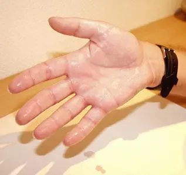
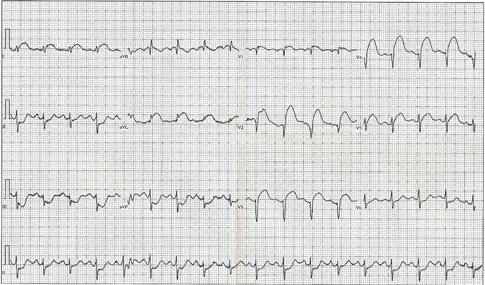

PROFILES 2023S1 · Médecine humaine · LOT_001 · Phase A V0 · rédaction du 26.10.2026 (Europe/Zurich)
Transpiration anormale
LOT_001 — Phase A V0 — situation clinique de départ G1 « Transpiration anormale »
Ce fichier fixe la vérité du LOT_001. Il contient la monographie du SSP (Situation as Starting Point, situation clinique de départ) G1 en 14 points, puis les 10 diagnostics différentiels (DD) que la Phase B développeS1S2. Le référentiel PROFILES 2023 a nommé G1 « abnormal perspiration », et la SMIFK-CIMS (Commission des examens fédéraux) l'appliquera à l'examen fédéral à partir de 2028.S1S2
Sept DD graves 🚩, chacun doté d'un rang d'exclusion E (E1 = à exclure en premier, liste au Bloc 2), passent avant toute cause bénigne ; le coup de chaleur sur anhidrose étendue reste une urgence transversale sans monographie propre.S5S14S22S24
Statut des preuves. Les faits cliniques reprennent la Phase A V9 (sources ouvertes le 23.10.2026). Le 26.10.2026, le rédacteur a vérifié dans le corpus local de l'AIPS (information professionnelle suisse publiée par Swissmedic via Refdata, fichier AipsDownload_20261008.xml) numéros Swissmedic, titulaires et URL des 11 spécialités citéesS113. Il a relu le même jour, sur files.refdata.ch, les rubriques des informations professionnelles (IP) portant dose, contre-indication, mise en garde, grossesse ou allaitement, et ouvert en texte intégral S105–S117 (résumés seuls pour S108 et S111). L'index des preuves se trouve dans evidence/INDEX.md.S113
Bloc 1 — Monographie du SSP G1 en 14 points
1. Définition et sémantique
La transpiration devient anormale lorsque sa quantité, sa répartition, sa chronologie, son odeur ou sa couleur s'écartent du fonctionnement attendu. La ligne directrice S1 de la Deutsche Dermatologische Gesellschaft (DDG, société allemande de dermatologie), version 2023, définit l'hyperhidrose comme une sudation qui dépasse les besoins de la thermorégulationS3S5S6. Elle distingue une forme primaire idiopathique d'une forme secondaire due à une cause interne ou externeS3S5S6. L'hypohidrose réduit la sudation, l'anhidrose la supprime, la bromhidrose modifie l'odeur et la chromhidrose la couleur ; aucun de ces termes ne nomme une cause.S3S5S6
Fenêtres de sémantique :
Hyperhidrose
La chaleur ou l'exercice font transpirer une personne saine ; le caractère pathologique tient donc à une sudation disproportionnée et à son retentissement, non à un volume. La forme primaire atteint volontiers aisselles, paumes ou plantes, de façon bilatérale. Une forme secondaire peut être généralisée, nocturne, asymétrique ou médicamenteuse, et une distribution focale ne prouve pas l'origine primaire. Aucun seuil universel n'existe : la gêne justifie l'évaluation. Exemple : ne plus pouvoir écrire ni tenir un instrument définit l'objectif du patient, pas un critère diagnostique.S3S4
Diaphorèse
Le terme décrit une sudation manifeste, souvent profuse, sans valeur étiologique. Une personne pâle, en sueur et confuse est évaluée pour une hypoglycémie ; une oppression ou une dyspnée fait rechercher une ischémie myocardique. Exemple : une glycémie de 2,8 mmol/L avec sueurs est une urgence traitable, et la disparition des sueurs après correction n'exclut pas une maladie associéeS14S15S22. Le piège consiste à traiter le signe sans mesurer la glycémie.S14S15S22
Sueurs nocturnes
L'entretien précise si vêtements ou draps deviennent mouillés, si la chambre est surchauffée et si fièvre, perte de poids ou toux accompagnent l'épisode. Aucun seuil de volume ni diagnostic automatique de cancer n'existe. La forme primaire focale cesse typiquement pendant le sommeil, ce qui n'interdit pas la sueur d'une fièvre. Trois nuits humides dans une pièce surchauffée ne valent pas des draps trempés en chambre tempérée avec amaigrissement documenté.S3S7S18S24
Hypohidrose et anhidrose
Une réduction étendue de la sudation retire le refroidissement par évaporation : la peau reste sèche alors que le patient a chaud, a des céphalées ou fait un malaise. Une petite zone sèche se compense ; l'étendue et la chaleur font le risque. Le médecin recherche un médicament ou une affection cutanée ou neurologique, sans jamais d'antitranspirant sur peau sèche.S5S11
Bromhidrose
Le médecin examine peau, plis, pieds, vêtements et soins, et décrit séparément quantité et odeur, car l'examen cutané oriente mieux qu'une recherche endocrinienne. Exemple : une odeur des deux pieds sans changement de quantité fait examiner peau et chaussures d'abord.S3S6
Chromhidrose
Le médecin distingue ce qui se voit sur la peau de ce qui provient des textiles ou des produits ; une photographie consentie documente un phénomène intermittent sans remplacer l'examen. Le terme reste descriptif tant que la cause manque. Exemple : une zone colorée après deux applications d'un nouveau produit pose une chronologie, pas une causalité.S6
Le lecteur distingue l'entité de ses voisines.
Terme
Ce que le terme décrit
Ce qu'il ne décrit pas
Terme à éviter
Hyperhidrose focale primaire
Sudation focale, bilatérale, idiopathique et gênante (DDG 2023).
Elle laisse possible une cause secondaire concomitante.
« Transpiration nerveuse ».
Hyperhidrose secondaire
Sudation expliquée par une maladie, un médicament ou un état physiologique.
Elle ne désigne aucune cause précise.
« Sueurs banales ».
Bouffée vasomotrice
Accès de chaleur avec rougeur et sueur de la transition ménopausique.
Elle ne prouve pas une fièvre infectieuse.
« Fièvre » sans mesure.
Fièvre
Élévation régulée de la consigne thermique.
Elle ne désigne pas l'hyperthermie du coup de chaleur.
« Hyperthermie » pour toute fièvre.
2. Épidémiologie (Suisse, puis Europe)
Aucune étude suisse représentative ne permet de quantifier l'ensemble du SSP G1 ni la part de ses causes. Les Hôpitaux universitaires de Genève (HUG) estiment l'hyperhidrose à environ 3 %S4 de la population. L'Hôpital universitaire de Zurich (USZ) l'estime à 2–4 %S45, avec un début fréquent entre 6 et 16 ans. Le retentissement social de la forme primaire coexiste avec le risque de retard diagnostique d'une infection, d'un cancer ou d'un défaut de refroidissement.S3S5
Le lecteur compare les dénominateurs avant les chiffres.
Indicateur
Valeur et source
Limite d'interprétation
Hyperhidrose, Suisse
≈ 3 % (HUG, page 2025)S4 ; 2–4 %, début 6–16 ans, plus fréquente chez les femmes, début palmaire souvent prépubertaire, axillaire ou plantaire plutôt pubertaire (USZ, page du 20.05.2026)S45
Pages sans enquête nationale ni répartition cantonale.
Hyperhidrose, Suède
1 353 réponses sur 5 000 personnes de 18–60 ans : primaire 5,5 % ; primaire sévère (score 3–4 de l'Hyperhidrosis Disease Severity Scale, HDSS) 1,4 % ; secondaire 14,8 %S26
Questionnaire et non-réponse limitent la transposition.
Hyperhidrose, Danemark
Donneurs de sang : 2 794/30 808 autodéclarés, 9,07 % (intervalle de confiance [IC] à 95 % : 8,75–9,40) ; diagnostic hospitalier 284/122 225, 0,23 % (0,21–0,26)S27
Définitions et dénominateurs diffèrent ; aucune fusion n'est permise.
Tuberculose, Suisse et Liechtenstein
544 cas en 2025, 6,0/100 000 habitants, plus haut niveau depuis 2018 selon l'Office fédéral de la santé publique (OFSP) ; hausse surtout chez les personnes nées à l'étrangerS19
L'incidence ne donne pas la probabilité chez un patient qui transpire.
Virus de l'immunodéficience humaine (VIH), Suisse
318 cas déclarés en 2024, soit 3,5/100 000 habitants (Bulletin de l'OFSP 44/2025)S106 ; 352 cas et 4,0/100 000 en 2023S115
La déclaration ignore les infections non diagnostiquées.
Diabète déclaré, Suisse
6,2 % des 15 ans et plus en ménage privé déclarent en 2022 un diabète ou un traitement antidiabétique (4,8 % en 2017) ; environ un cinquième s'injectent de l'insuline (Observatoire suisse de la santé [Obsan], Enquête suisse sur la santé, n ≈ 22 000)S105
Ce chiffre décrit la population exposée à l'hypoglycémie iatrogène, pas son incidence.
Infarctus et mortalité cardiovasculaire, Suisse
L'Office fédéral de la statistique (OFS) compte en 2024 19 851 cas d'infarctus aigu du myocarde (13 004 hommes, 6 847 femmes ; somme calculée)S112 ; les maladies cardiovasculaires causent 20 029 des 71 942 décès, soit 26,7 % chez les hommes et 28,9 % chez les femmesS112S117
Les cas hospitaliers omettent les syndromes coronariens aigus (SCA) vus en ambulatoire.
Coût, Suisse
En 2022, les maladies cardiovasculaires coûtent 9,5 milliards de francs, soit 10,4 % des 91,5 milliards de dépenses de santé ; les maladies non transmissibles en représentent 72 % (OFSP, étude publiée le 11.11.2025)S116
Hyperhidrose et SSP G1 non chiffrés.
Ménopause, Europe
Ménopause naturelle vers 51 ans en Europe selon la Société européenne d'endocrinologie (ESE, 2025)S21 ; symptômes vasomoteurs (SVM) modérés à sévères chez 31 % (France) à 52 % (Italie) des femmes ménopausées de 40–65 ans interrogées (Nappi, Maturitas 2023)S111
L'âge n'explique pas automatiquement une sueur nouvelle.
Autres DD
Hyperthyroïdie, endocardite, lymphome de Hodgkin, phéochromocytome et paragangliome : fréquences au tableau du Bloc 2.
Chaque dénominateur diffère ; aucune fusion.
Anhidrose étendue
Risque de trouble thermorégulateur et de coup de chaleur (USZ)S5
Le risque dépend de l'étendue et de l'exposition.
Histoire naturelle et enjeux :
Évolution de la forme primaire
Débutée dans l'enfance ou l'adolescence, la forme primaire peut s'atténuer après le jeune âge adulte. Aucun âge précis n'est promis, mais la DDG en tient compte avant un geste irréversible. Le patient évite poignées de main, examens, vêtements ou tâches manuelles ; le médecin recherche ces limitations et la macération. Une gêne ancienne stable impose de reconsidérer le diagnostic si le profil devient nocturne, généralisé ou fébrile. Exemple : un début à 12 ans avec limitation persistante de l'écriture correspond au profil, sans prédire la durée.S3S4S45
Trajectoires déficitaires et qualitatives
Un déficit sudoral étendu expose au coup de chaleur, alors qu'un déficit limité se compense. Un cas danois de syndrome de Ross, sans valeur générale, décrit une extension du déficit sur 23 ans avec sudation compensatrice et intolérance à la chaleur. La bromhidrose dépend d'une pullulation microbienne, de l'alimentation ou d'un déficit enzymatique. Des pseudochromhidroses européennes disparaissent après retrait du facteur (cas français, réapparition à la réexposition) ou sans récidive pendant 6 mois (deux adultes norvégiens)S6S81S82S83S84. Ces observations ne donnent ni fréquence de guérison ni consigne médicamenteuse.S5S6
Santé publique
Les enjeux tiennent au handicap d'une affection fréquente, au coût de traitements répétés (toxine, dispositifs) et surtout au retard diagnostique d'une cause grave rare, tuberculose en hausse depuis 2022 comprise. Aucun dépistage populationnel de l'hyperhidrose n'est recommandé.S19S20S105S116
3. Physiopathologie
Le système sympathique commande les glandes eccrines par une transmission cholinergique : l'acétylcholine stimule leurs récepteurs muscariniques, et la sueur évaporée emporte de la chaleur. Dans la forme primaire, des glandes de nombre et de taille normaux sont surstimulées ; une cause secondaire modifie la commande, le métabolisme ou la consigne thermique.S3S5
3.1 Amorce, développement, installation et maintien
La cascade suit quatre étapes :
Voie cholinergique sudorale
Un stimulus thermique, émotionnel ou pathologique active d'abord le centre hypothalamique, puis la fibre sympathique libère l'acétylcholine sur les récepteurs muscariniques eccrines. La glande sécrète et l'évaporation refroidit la peau ; dans la forme primaire, la surstimulation persiste sans lésion glandulaire. Un antimuscarinique réduit donc la sécrétion sans traiter une cause secondaire. BOTOX se lie à la terminaison, est internalisé puis clive la protéine synaptique de 25 kilodaltons (SNAP-25) nécessaire à l'exocytoseS3S9. Le piège consiste à vouloir supprimer toute sueur, alors que la sueur thermorégulatrice reste utile.S3
Refroidissement par évaporation
La sueur évaporée emporte de la chaleur, et la vasodilatation cutanée complète la perte thermique (USZ). Une anhidrose étendue empêche la sécrétion d'augmenter avec la température ou l'effort ; le patient se réchauffe donc malgré une peau sèche, et le refroidissement externe supplée en partie. Exemple : 38,2 °C axillaires avec frissons ne relèvent pas du refroidissement systématique, alors que 40,5 °C après effort avec confusion imposent la filière du coup de chaleur.S5S11S30S50
Fièvre et sueur
Un stimulus infectieux ou inflammatoire libère des cytokines (interleukines 1 et 6, facteur de nécrose tumorale alpha) puis des prostaglandines, qui élèvent la consigne hypothalamiqueS50S51S52. La montée provoque frissons et conservation de chaleur, qui augmentent la consommation d'oxygène, puis la sueur évacue la chaleur à la défervescence. Pour une fièvre régulée, un refroidissement externe systématique peut donc aggraver les frissons.S50S51S52
Bouffée vasomotrice
La baisse des œstrogènes lève leur frein sur les neurones hypothalamiques à kisspeptine, neurokinine B et dynorphine (KNDy). La neurokinine B, via son récepteur NK3, déplace alors le centre thermorégulateur : accès de chaleur, rougeur du cou et sudation apparaissent. Les accès nocturnes fragmentent le sommeil, d'où fatigue et troubles de concentration. Le fézolinétant (VEOZA®, n° 69232) antagonise ce récepteur NK3 selon son IP.S53S54
Thyrotoxicose
L'excès d'hormones thyroïdiennes augmente thermogenèse et métabolisme de base ; dans la maladie de Basedow, des anticorps stimulent le récepteur de la thyréostimuline. La chaleur produite explique thermophobie et sueurs. L'hyperthyroïdie prolongée expose à la fibrillation atriale et à des complications cardiovasculaires et osseuses.S56S57
Hypoglycémie
La baisse du glucose déclenche une contre-régulation autonome (sueurs, tremblements, faim), puis le manque de glucose cérébral perturbe pensée et conscience (neuroglycopénie).S12S14S74S75
Ischémie myocardique
La souffrance myocardique active le système autonome : sueur, nausée et malaise accompagnent ou remplacent la douleur, notamment chez la personne âgée ou diabétique.S22S37
Accès catécholaminergique
Un phéochromocytome ou un paragangliome (PPGL) libère des catécholamines et produit en continu des métanéphrines. La vasoconstriction périphérique explique la pâleur des accès (Association française d'urologie [AFU] 2024–2026 ; protocole national de diagnostic et de soins [PNDS] 2021), et céphalées, palpitations et sueurs forment la triade évocatrice.S23S66S104
Tableau de corrélation : lésion ou perturbation → exploration → thérapeutique (mécanisme)
Lésion / perturbation
Exploration qui la montre
Thérapeutique qui la corrige (mécanisme)
Commande sudorale focale disproportionnée
Entretien, répartition, HDSS ; test de Minor (cartographie)
Sels d'aluminium : obturation du canal eccrine ; ionophorèse (mécanisme incertain)S3
Stimulation muscarinique des glandes axillaires
Examen axillaire, recherche d'une cause secondaire
Éviction de la chaleur et refroidissement externe : suppléance de l'évaporationS5
Ces mécanismes expliquent surchauffe sur anhidrose, neuroglycopénie, insuffisance cardiaque ischémique, emboles d'endocardite et transmission tuberculeuse, et pourquoi un traitement sudoral ne traite jamais une cause secondaire.S5S14S29S37
4. Démarche diagnostique
Le médecin exclut d'abord les DD graves dans l'ordre E1 → E7 : ischémie myocardique, hypoglycémie, infection endovasculaire, puis surchauffe sur défaut de sudation. Il caractérise ensuite répartition, chronologie, signes associés et expositions ; iatrogénie, sevrage, apnées du sommeil, attaque de panique et lymphomes non hodgkiniens restent dans le différentiel.S3S5S7S14S22
Chaque hypothèse grave possède un discriminant, un piège et une conduite immédiate.
Rang E
Danger
Signe ou examen qui tranche
Piège classique
Conduite immédiate si positif
🚩 E1
Syndrome coronarien aigu : la diaphorèse accompagne l'ischémie.
ECG interprété en 10 min ; troponine ultrasensible replacée dans sa cinétique.
L'absence de douleur ou une première troponine normale ne rassure pas.
Filière urgente ; reperfusion sur sus-décalage persistant sans attendre la troponine.S22S37
🚩 E2
Hypoglycémie : sueurs et troubles neurologiques.
Glycémie immédiate ; < 4,0 mmol/L chez l'adulte diabétique impose la correction.
Attendre la mesure malgré une forte suspicion chez un diabétique.
Après exclusion des graves, un signe discrimine trois profils fréquents. Une sudation focale, bilatérale, ancienne et absente la nuit oriente vers la forme primaire ; des bouffées avec cycles modifiés, vers la ménopause ; une thermophobie avec tachycardie et amaigrissement, vers l'hyperthyroïdie. Une forme primaire ancienne n'empêche pas une maladie nouvelle, l'âge n'explique pas tout, et une TSH basse ne signe pas une forme manifeste.S3S17S21S28
5. Anamnèse ciblée et drapeaux rouges
Le médecin précise début, étendue, symétrie, déclencheurs, sommeil, retentissement et symptômes associés ; il relie chaque question à une hypothèse et vérifie médicaments, substances, arrêts de prise et expositions infectieuses. Confusion, dyspnée, oppression, malaise marqué ou intolérance à la chaleur avec peau sèche imposent une évaluation urgente.S3S5S7S14S22
Chaque question porte sa raison physiopathologique et sa conséquence.
Question
Raison (mécanisme)
La réponse change la conduite
Quand le phénomène a-t-il commencé et comment a-t-il changé ?
Le début précoce appartient au profil primaire ; une modification récente fait rechercher une cause acquise.
Un profil habituel modifié relance l'évaluation secondaire.S3S45
Les deux côtés et les mêmes territoires sont-ils atteints ?
Une lésion nerveuse modifie la réponse de son territoire.
La distribution exacte est décrite, pas « transpiration ».S3S7
La sudation cesse-t-elle pendant le sommeil ?
L'arrêt nocturne est un trait de la forme primaire, pas un arrêt sympathique général.
Des sueurs nocturnes nouvelles font chercher signes associés et contexte thermique.S3S7
Existe-t-il faim, tremblements, confusion ou prise d'insuline ou de sulfonylurée ?
Insuline, repas et effort révèlent le déséquilibre glucidique.
Mesure et traitement sans retarder l'urgence.S14S74S75
Existe-t-il oppression, dyspnée, nausées ou malaise ?
Une ischémie peut être peu douloureuse chez la personne âgée ou diabétique.
Drapeaux rouges actionnables. Des sueurs avec altération de conscience imposent l'évaluation vitale et la glycémie ; avec oppression ou dyspnée, un ECG et la filière urgente, sans retour seul. Une fièvre avec défaillance impose l'évaluation hospitalière, et une tuberculose pulmonaire suspectée les précautions de transmission et les prélèvements. Une adénopathie persistante avec signes généraux exige une histologie. Une peau sèche avec confusion à la chaleur impose de refroidir et d'appeler le 144.S5S14S18S22S24
6. Examen physique ciblé, région par région
Le médecin décrit le normal avant l'anomalie et ne déclare jamais normale une région non examinée. Il compare les territoires sudoraux, mesure température, pouls et pression, puis examine cou, ganglions, thorax et abdomen.S3S59
Normal attendu, geste et signe pathologique, région par région
Région
Normal attendu
Geste et seuil
Signe pathologique et valeur
Peau et territoires sudoraux
Peau intacte, humidité adaptée au contexte.
Grade axillaire DDG : tache de 5–10 cm légère, de 10–20 cm modérée, de plus de 20 cm importante ; humidité, perles puis ruissellement marquent la progression.
Sueur focale bilatérale : profil primaire ; sécheresse étendue à la chaleur : perte de refroidissement ; un examen sec au repos n'annule pas l'anamnèse.S3S5
Température
HUG : 36,4–38 °C en rectal, 35,8–38 °C en auriculaire, 35,8–37,5 °C en axillaire.
Thermomètre selon son mode d'emploi ; valeur brute et site notés, sans correction.
38,2 °C axillaires dépassent l'intervalle et s'écrivent « 38,2 °C, axillaire ».S50
Pouls et mains
Pouls régulier entre 60 et 100/min ; mains stables.
Pulpe des doigts sur le bord externe de la face antérieure du poignet ; mains tendues sous une feuille.
Tachycardie > 100/min, pouls irrégulier ou tremblement fin nouveau font demander glycémie, ECG ou bilan thyroïdien.S59S60S61
Pression artérielle
Mesure standardisée selon la Société suisse d'hypertension.
Repos de 5 min assis, dos appuyé, vessie vide, sans tabac, café ni thé depuis 30 min ; brassard large si le bras dépasse 33 cm ; 3 mesures à 1–2 min, retenir la 2e ou la moyenne des 2 dernières.
Une pression normale entre les accès laisse ouvert un PPGL. Exemple recalculé : 132/84 et 130/82 donnent 131/83 mmHg.S79S23
Cou et thyroïde
Aucune tuméfaction ; glande invisible.
Patient assis, cou découvert ; inspection pendant la déglutition, puis palpation de l'isthme et des deux lobes.
Un goitre décrit la taille, pas la fonction.S59S94S95
Aires ganglionnaires
Aucune tuméfaction acquise.
Palpation des chaînes cervicales et sus-claviculaires, de l'aisselle bras soutenu (quatre parois et sommet) et de l'aine hanches fléchies (groupes horizontal et vertical).
Une tuméfaction acquise > 1 cm entre dans le diagnostic clinique sans fixer un seuil de malignité.S24S49S62
Thorax
B1 et B2 audibles ; murmure vésiculaire symétrique ; pas de tirage.
Auscultation en décubitus dorsal, latéral gauche puis assis penché en avant ; pouls palpé pour repérer B1.
Un souffle nouveau, des crépitants ou une abolition focale orientent ; une auscultation normale ne ferme pas l'hypothèse d'endocardite.S29S36S46S80
Abdomen et rate
Paroi souple ; rate non palpable.
Paroi relâchée, mains chaudes ; main droite remontée de la fosse iliaque droite au rebord costal gauche en inspiration profonde.
Une pointe splénique renforce une hypothèse sans que son absence l'écarte.S48
Conscience
Réponses adaptées, déglutition sûre.
Évaluation pendant l'entretien.
Altération : évaluation vitale et glycémique, pas de voie orale dangereuse.S14
La paume est humide au repos. Cette photographie montre la face palmaire de la main droite, doigts écartés, au repos.S3

Le cliché brut se lit d'abord sans aide : cherchez vous-même le signe.
La copie annotée porte des repères ; la lecture guidée les décrit.
La lecture guidée suit les repères.
1. Un film brillant de sueur recouvre la paume : la sudation est visible au repos.S3
2. Les pulpes des doigts luisent : l'atteinte distale est symétrique, sans autre signe cutané.S3
Les pièges sont à connaître.
Une paume humide ne distingue pas à elle seule l'hyperhidrose focale primaire d'une cause secondaire : la fièvre, le tremblement ou la tachycardie restent à chercher.S3
L'image décide de la conduite. Une sudation palmaire visible au repos et isolée oriente vers l'hyperhidrose focale ; des signes associés imposent d'abord les causes secondaires.
Image : Hans-Christian Wichert, CC BY-SA 3.0, Wikimedia Commons, File:Hyper schweisshand sb.jpg, consultée le 2026-11-10. Copie annotée : œuvre dérivée sous la même licence.
Fenêtres de technique et de valeur :
Auscultation cardiorespiratoire
B1 correspond à la fermeture mitrale et tricuspide au début de la systole. B2 correspond à la fermeture aortique et pulmonaire au début de la diastole. Dans une pièce calme, le médecin décrit un bruit ajouté par sa chronologie, son maximum et ses irradiations, puis compare les hémithorax en ventilation ample. Les crépitants sont des sons ajoutés, discontinus et non musicaux ; le type fin télé-inspiratoire traduit l'ouverture brusque d'une petite voie aérienne fermée (Collège des enseignants de pneumologie, CEP, 2009)S29S36S46S96. Exemple : 38,5 °C avec souffle nouveau font documenter microbiologie et échographie, car le souffle ne confirme ni n'exclut seul l'endocardite.S29S36S46S96
Fièvre et frissons
Les frissons sont des contractions musculaires qui produisent de la chaleur quand la consigne monte ; une sensation de froid isolée ne les prouve pas. Confusion, détresse respiratoire ou défaillance circulatoire imposent l'évaluation urgente quel que soit le chiffre.S50S51
Tremblement postural
Le tremblement, mouvement involontaire oscillant, s'accentue physiologiquement avec stress, fatigue, caféine ou médicaments. Le tremblement fin accompagne la thyrotoxicose sans démontrer sa cause. Exemple : tremblement nouveau, pouls à 112/min et mains chaudes et moites motivent le bilan thyroïdienS58S59S60. « Le patient se sent trembler » est un symptôme, alors que des oscillations observées mains tendues sont un signe.S58S59S60
Palpitations et pouls
Les palpitations désignent la perception inhabituelle des battements ; le manuel britannique cité fixe la tachycardie au-delà de 100/min et la bradycardie sous 60/minS59S61. Un pouls irrégulier conduit à l'ECG, et douleur thoracique, syncope ou défaillance à la filière urgente ; une fibrillation atriale se traite selon ce rythme et sa tolérance.S23S56S59S61
Amaigrissement
L'entretien distingue perte voulue et involontaire et recherche appétit, transit et symptômes associés. Les symptômes B du lymphome de Hodgkin exigent une perte involontaire de plus de 10 % du poids en 6 moisS24S58S68. Calcul recalculé : 70 → 62 kg donnent 8/70 × 100 = 11,4 %, ce qu'un poids isolé ne permet pasS24S68. Un poids stable laisse possibles une infection et un lymphome.S24S58S68
Toux et expectoration
L'irritation des récepteurs des voies aériennes active un arc réflexe (voies afférentes, tronc cérébral, voies motrices). Le médecin précise début, toux sèche ou productive, sang, dyspnée, douleur, fièvre et perte de poids. L'expectoration expulse par la bouche des sécrétions trachéobronchiques anormales, distinctes de la salive. Le guide suisse prévoit deux expectorations espacées d'une heure, et un IGRA ne prouve pas qu'une toux est tuberculeuse.S18S63S96
Adénopathie
Un ganglion grossit par réaction antigénique, prolifération lymphoïde ou envahissement tumoral. L'examen décrit siège, taille en cm, consistance, sensibilité, mobilité et peau en regard ; aucun caractère isolé ne garantit la bénignité. Exemple : une tuméfaction cervicale acquise de 2 cm, ferme et persistante, avec sueurs nocturnes est investiguée, par exérèse plutôt que cytoponction si un Hodgkin est suspecté.S24S59S62
Bouffée vasomotrice observée
Pendant un accès observé, le médecin constate rougeur du cou ou du visage et sudation ; la personne ressent la chaleur, parfois des palpitations. Le CHUV (Centre hospitalier universitaire vaudois) décrit des épisodes de quelques secondes à quelques minutes, ressentis d'abord au thorax ou à l'abdomen, avec un examen normal entre les accès. Trois accès et trois réveils la même nuit mesurent le retentissement, sans seuil diagnostique.S53S54S55
Pâleur
La pâleur est une décoloration observée de la peau ou des muqueuses. Paupière inférieure abaissée, la conjonctive est normalement rose foncé ou rouge, et rose pâle ou blanche si elle est anormale ; ongles et conjonctives sont les sites enseignés. La vasoconstriction explique la pâleur d'un accès de PPGL, la baisse d'hémoglobine celle de l'anémie. Une pâleur à deux sites motive l'hémogramme sans compter pour deux preuves.S66S90S91S92S104
Tirage
Le tirage est un creusement inspiratoire des espaces intercostaux ou sus-claviculaires qui traduit un travail respiratoire accru. Le médecin compte les mouvements et compare l'ampliation : trente par minute avec tirage font deux constatations, sans nommer la cause. La dyspnée est ressentie, le tirage observé.S80
7. Approche syndromique
Le patient rapporte les signes fonctionnels et le médecin constate les signes physiques, dont les gestes figurent au point 6. Un même signe appartient à plusieurs syndromes ; chaque association garde donc son discriminant.S3S59
Huit syndromes éclatés en signes fonctionnels, signes physiques, geste et mécanisme
Syndrome
Signes fonctionnels
Signes physiques et geste
Mécanisme et discriminant
7.1 Hypoglycémique (DX.2)
Faim, malaise, difficulté à réfléchir, vision floue ou double, céphalée ou nausée.
Peau chaude et moite, tachycardie de repos, tremblement fin, parfois goitre.
La thermogenèse augmente ; TSH basse puis hormones libres élevées documentent la forme manifeste.S56S58
7.8 Sudoral local, déficitaire ou qualitatif (DX.4)
Excès local gênant, peu de sueur à la chaleur, odeur ou vêtements colorés.
Territoires humides comparés, sécheresse mesurée ; peau, odeur, produits et chronologie de la couleur examinés.
Surstimulation glandulaire, déficit d'évaporation ou cause cutanée ; l'odeur ne mesure pas le volume.S3S5S6
Définitions des signes fonctionnels :
Confusion
La confusion est une altération de la réponse, l'orientation ou la coopération observées pendant l'entretien. Le médecin vérifie fonctions vitales et glycémie avant de conclure à une cause psychiatrique, et une déglutition non sûre interdit toute boisson sucrée. Exemple : 2,3 mmol/L avec réponses incohérentes et sudation imposent l'appel à l'aide et une voie adaptée.S14S15
Malaise et oppression
Le malaise est une plainte peu spécifique, avec ou sans perte de connaissance, alors qu'une syncope relève d'une hypoperfusion cérébrale transitoire (HUG). L'oppression thoracique est un ressenti de pression ou de serrement que les HUG relient, dans l'angine de poitrine, à un apport sanguin cardiaque insuffisant. Exemple : une personne de 52 ans dit « malaise », puis décrit un serrement sans perte de connaissanceS37S86S87S88. Le piège consiste à assimiler tout malaise à une syncope ou toute oppression au cœur.S37S86S87S88
Dyspnée
La dyspnée est une gêne respiratoire ressentie, alors que la détresse respiratoire se constate et impose une action. Avec des sueurs aiguës, le médecin ne présume pas une origine anxieuse (définition universelle 2026)S22. Exemple : le patient ne monte plus un étage qu'il montait avant.S22
Fatigue
La fatigue (asthénie) est un ressenti d'incapacité physique ou psychique ; Blood Cancer UK la décrit comme une lassitude intense qui ne cède pas au repos. Le médecin demande ce que le patient ne peut plus faire et depuis quand, puis note une échelle de 0 à 10 au suivi ; elle ne prouve aucun lymphome.S91S96
Faim, nausée, trouble visuel, céphalée
La faim relève de la contre-régulation autonome selon l'University College London Hospitals (UCLH). La Société française d'endocrinologie (SFE) rattache la nausée, envie de vomir, à la réaction neurovégétative de l'hypoglycémie. La vision floue ou double traduit la dysfonction nerveuse due au manque de glucose. La céphalée s'associe à l'hypoglycémie et à la fièvre.S50S73S74S75S76S78
Thermophobie, nervosité, transit accéléré
La thermophobie est une mauvaise tolérance à la chaleur due à l'accélération métabolique ; le médecin demande si le patient ouvre les fenêtres quand son entourage a froid, puis touche une peau chaude et moite. La nervosité recouvre agitation, irritabilité et humeur changeante. Le transit accéléré donne des selles plus fréquentes par progression digestive accélérée (SFE).S56S58
Baisse d'appétit
La baisse d'appétit diminue l'envie de manger, distincte de la quantité ingérée ; les HUG la citent parmi les symptômes fébriles. Le médecin demande les repas sautés et les portions laissées, puis pèse le patient à chaque visite.S50S77
8. Diagnostic positif et critères
Aucun critère ne confirme toutes les causes du SSP G1. Pour l'hyperhidrose focale primaire, la DDG 2023 retient l'anamnèse et l'examen, complétés au besoin par la cartographie et l'échelle de retentissement, sans seuil de débitS1S3. Une forme secondaire exige la preuve propre à la maladie recherchée.S1S3
L'étiologie ; une autorisation de médicament pour un enfant ou une région non autorisée.S3S8
Culture, PCR, histologie
Une preuve spécifique d'une hypothèse précise.
Toute la causalité à partir d'une anomalie isolée non spécifique.S18S20S24
HDSS (paraphrase française de l'échelle présentée par la DDG ; traduction non validée officiellement)
Score
Le patient décrit
Interprétation
1
La sueur ne gêne jamais et ne perturbe jamais les activités.
Retentissement faible.
2
La sueur reste tolérable et perturbe parfois les activités.
La gêne permet de fixer une cible.
3
La sueur est à peine tolérable et perturbe fréquemment les activités.
Retentissement important (forme sévère).
4
La sueur est intolérable et perturbe constamment les activités.
Retentissement majeur (forme sévère).
Critères d'orientation de l'hyperhidrose focale primaire :
Critères cliniques suisses (Revue médicale suisse 2017, dermatologie des HUG)
Menzinger et Quenan exigent plus de 6 mois de sudation focale excessiveS3S28S114. Ils demandent aussi au moins 4 des 7 critères suivantsS28S114. Ce sont une atteinte surtout axillaire, palmaire, plantaire ou craniofaciale, une distribution bilatérale et relativement symétrique, et au moins 1 épisode par semaineS28S114. S'y ajoutent l'absence de sudation nocturne, un début avant 25 ans, une anamnèse familiale positive et une gêne quotidienneS28S114. L'étude citée indique une sensibilité de 99 % et une spécificité de 82 %S28S114. Une atteinte asymétrique ou généralisée, des sueurs nocturnes ou un début après 25 ans rendent une forme secondaire probableS28S114. Le formulaire britannique local CG055 (Coventry et Warwickshire, octobre 2026) se contente de 2 traits sur 6 ; le médecin applique d'abord la source suisse et note la divergenceS3S28S114. Exemple : deux aisselles atteintes chaque semaine depuis 7 mois, un début à 16 ans, aucune sueur nocturne et une gêne au travail réunissent 5 critèresS28S114. Ces critères ne sont pas un test de certitude : la recherche d'une cause secondaire reste due.S3S28S114
Critères propres aux DD graves
L'infarctus exige une hausse et/ou une baisse de troponine avec au moins une valeur au-delà du 99e percentile propre au sexe et au dosage, et des arguments d'ischémie (définition universelle 2026)S22. L'hypoglycémie se traite sous 4,0 mmol/L chez l'adulte diabétique (HUG)S14. L'endocardite combine microbiologie et imagerie (Société européenne de cardiologie, ESC 2023)S93. La tuberculose active se prouve par la microbiologie, le VIH se confirme sur un second échantillon et le Hodgkin exige l'histologieS18S20S24. Le PPGL se suspecte au-delà de 2 fois la limite des métanéphrines, puis se localise.S23
9. Examens complémentaires
Aucun examen de référence ne confirme le SSP G1, et une hyperhidrose primaire typique ne requiert ni biologie ni imagerie systématique. Devant une forme secondaire, le médecin prescrit des examens orientés et lit les références du laboratoire exécutant, sans inventer d'intervalle « suisse » unique.S3S17
Cet ECG 12 dérivations montre un sus-décalage du segment ST. Le tracé standard est enregistré à vitesse habituelle chez un patient en STEMI.S37

Le tracé brut se lit d'abord sans aide : le médecin repère lui-même les dérivations anormales.
La copie annotée porte quatre repères ; la lecture guidée les décrit.
La lecture guidée suit les repères.
1. En V4, le sus-décalage ST est convexe, ample et englobe l'onde T.S37
2. En V2, le sus-décalage ST est marqué et l'onde R est réduite.S37
4. En II, le segment ST est surélevé dans une dérivation inférieure.S37
Les pièges sont à connaître.
Un premier ECG normal n'exclut pas un syndrome coronarien aigu : le tracé se répète.
Un sus-décalage ST isolé peut aussi venir d une péricardite ou d'une repolarisation précoce : le contexte clinique tranche.S37
L'image décide de la conduite. Un sus-décalage ST dans des dérivations contiguës, avec douleur thoracique et sueurs, impose la reperfusion immédiate ; l'hypoglycémie ne modifie pas l'ECG.
Glycémie immédiate si malaise, traitement à risque ou trouble neurologique
Objectif de correction > 4,0 mmol/L avec récupération.
< 4,0 mmol/L : traitement chez l'adulte diabétique ; seuil d'action, pas intervalle de normalité.
Voie adaptée à la déglutition, recontrôle ; un capillaire discordant se vérifie sans suspendre les soins.S14S15
ECG et troponine si ischémie évoquée
Troponine T Roche Elecsys : l'Inselspital publie un 99e percentile adulte indicatif unique de 14 ng/L (2026), sans seuil propre au sexe.
Valeur élevée = atteinte myocardique dont le caractère aigu et ischémique reste à établir.
Ni confirmation sur une valeur isolée ni exclusion sur un premier dosage. La définition universelle 2026 exige pour l'infarctus le 99e percentile propre au sexe : seuils à demander au laboratoire.S22S71
TSH si dysthyroïdie évoquée (adulte hors grossesse)
LUKS (Luzerner Kantonsspital), immunodosage électrochimiluminescent (ECLIA, Cobas 8000 e801) : 0,27–4,20 mUI/L ; prélèvement entre 7 et 9 h.
TSH basse → test réflexe fT4 (12,0–22,0 pmol/L) et T3 libre (3,1–6,8 pmol/L).
TSH basse avec hormones normales : profil subclinique. Exemple : TSH 0,10 mUI/L < 0,27 déclenche le réflexe.S17S35S69S70
Hémogramme (sang sur acide éthylènediaminetétraacétique, EDTA) et protéine C réactive (CRP) pour signes généraux
Une contrainte d'imagerie appelle une alternative précise (exemple du PPGL).
Situation
Alternative
Limite
Contre-indication au contraste iodé
Imagerie par résonance magnétique (IRM) selon le PNDS ; sans injection si le gadolinium pose aussi problème.
Protocoles non équivalents ; l'agent et la gravité de l'« allergie à l'iode » sont décrits.S66S67
Dispositif empêchant l'IRM
Tomodensitométrie (TDM) injectée si possible ; sinon TDM sans injection et imagerie fonctionnelle spécialisée.
Un examen restreint négatif ne vaut pas bilan complet.S23
Grossesse
Échographie abdominale aux deux premiers trimestres ; sinon IRM sans gadolinium ou TDM optimisée après discussion.
Pas de médecine nucléaire ; l'European Society of Urogenital Radiology (ESUR) 2025 admet un agent macrocyclique pour une indication très forte et demande un contrôle thyroïdien néonatal la 1re semaine après contraste iodé.S66S67
Enfant ou débit de filtration glomérulaire estimé (DFGe) < 30 mL/min/1,73 m²
IRM privilégiée (PNDS) ; injection revue avec la radiologie.
Sans contraste, la séquence n'est pas équivalente.S66S67
Prélèvement plasmatique fiable impossible
Métanéphrines urinaires de 24 h (consensus ESH), placées en confirmation par le CHUV.
La créatinine urinaire vérifie la complétude.S23S65
9.d Deuxième intention : après une hypothèse ou une première anomalie
Critère de passage et conduite
Hypothèse
Examen ciblé
Interprétation et conduite
Tuberculose pulmonaire plausible
Guide suisse 2024 : 2 expectorations à 1 h d'intervalle ; PCR, microscopie, culture.
Négatif : qualité du prélèvement revue ; l'IGRA ne tranche pas.S18
PPGL plausible
Métanéphrines libres plasmatiques après ≥ 20 min de décubitus, à jeun, sans effort, sur glace (ESH 2020).
Histoire, médicaments, sommeil et évolution revus.
Suivi programmé ; aucune TEP-TDM de dépistage.S3S7S24
9.d.1 Métanéphrines plasmatiques libres, Hôpital universitaire de Bâle (chromatographie liquide couplée à la spectrométrie de masse en tandem, LC-MS/MS, depuis le 22.10.2024)
Résultat
Signification
Conduite
Métanéphrine < 0,45 nmol/L ; normétanéphrine < 2,07 × 10⁻⁶ × âge³ + 0,540 nmol/L (0,80 à 50 ans ; 1,60 à 80 ans) ; méthoxytyramine < 0,11 nmol/L
PPGL sécrétant très improbable ; la valeur prédictive négative > 99 % n'est pas une sensibilité > 99 %.
Autre cause recherchée ; prédisposition génétique ou paragangliome non sécrétant : programme spécialisé.S23S64
Nouvelle mesure contrôlée ; élévation persistante → endocrinologie, test de freinage à la clonidine discuté.S23
Un métabolite > 2 fois la limite ou plusieurs élevés
Probabilité qui justifie la localisation (ESH 2020) ; > 4 fois : forte valeur prédictive positive (PNDS 2021).
Imagerie de localisation. Exemple recalculé : 1,00/0,45 = 2,22 fois la limite.S23S64S66
Fenêtres de prescription :
Troponine T, algorithme 0/1 h (Inselspital 2026)
Le document de l'Inselspital (version 21.0 du 25.06.2026) reprend l'algorithme ESC 2020 pour l'adulte sans indication de coronarographie immédiateS71S102. L'exclusion biologique exige une valeur initiale < 5 ng/L avec douleur depuis plus de 3 h, ou < 12 ng/L avec variation absolue à 1 h < 3 ng/LS71S102. La forte probabilité correspond à une valeur initiale ≥ 52 ng/L ou à une variation à 1 h ≥ 5 ng/L, et la zone d'observation impose un dosage à 3 hS37S71S102. Exemple : 10 puis 12 ng/L donnent une variation de 2 ng/L, pas 2 %S71. L'exclusion ne garantit pas la sortie, et une douleur récidivante impose de nouveaux prélèvements. Le corrigendum du 21.10.2026 de la définition universelle ne touche pas ces paragraphes cliniques.S22S37S71S102
Endocardite : hémocultures et échographie
Les HUG (protocole v1.1 du 19.03.2025) demandent hygiène des mains, trois applications d'antiseptique alcoolisé avec séchage et désinfection du bouchon. Ils prélèvent 8–10 mL par flacon adulte DUO BACTEC, aérobie d'abord, en traçant heure et site ; l'endocardite exige deux paires initiales puis une répétition au moins 1 h plus tardS89. En choc septique, le prélèvement précède l'antibiothérapie de moins de 30 minS89. L'ESC 2023 retient trois séries espacées de 30 min en veine périphérique, sans attendre le pic fébrile, et ces deux calendriers restent distinctsS29S93. L'ETO complète l'ETT négative ou non diagnostique avec suspicion, ou toute prothèse ou dispositifS29S93. Une suspicion forte fait répéter l'imagerie à 5–7 jours, et des cultures négatives à 48 h font solliciter le microbiologiste.S29S89S93
Métanéphrines urinaires de 24 h (CHUV)
Le CHUV demande un bocal opaque de 3 L contenant du citrate de sodium (10 g par litre estimé), conservé à 4 °C ; deux monovettes de 8,5 mL partent avec volume, durée et médicamentsS65. Pendant les 24 h précédentes et la collecte, la fiche exclut café, thé, chocolat, banane, noix, amandes, ananas, aubergine, kiwi, avocat, prune, tomate et alcoolS65. Seul un ordre médical suspend un médicament, et une collecte de 12 h ne vaut pas 24 h.S65
Test VIH : fenêtre et résultats
Le test initial recherche anticorps et antigène p24 ; une négativité dans la fenêtre sérologique n'offre pas la sécurité d'un test au-delà de 6 semainesS20. Une réactivité n'est pas un diagnostic avant confirmation, sans immunoblot automatique.S20
10. Arbre décisionnel
Le médecin suit les branches dans l'ordre du danger et garde plusieurs hypothèses si les résultats divergent. Un examen négatif ne permet de clore une hypothèse que dans les conditions validées de sa méthode, et la disparition des sueurs ne ferme jamais une branche dangereuse.S3S14S37
Si X → Y : branches ordonnées des graves (E1–E7) vers les fréquents
Nœud
Si le résultat est positif → action
Si négatif, limite ou discordant → suite
0. Confusion, malaise, dyspnée ou instabilité
→ fonctions vitales et glycémie, puis filière urgente adaptée.
Glycémie normale : causes cardiaque, infectieuse et thermique encore recherchées.S14S31S37
1. 🚩 E1 : ECG avec sus-décalage persistant ou très haut risque
→ reperfusion ou coronarographie immédiate sans attendre la troponine.
Patient stable : troponines sériées selon l'algorithme 0/1 h (point 9).S37S71
Discordance : interférences revues avec le laboratoire ; une TSH normale laisse possibles les formes centrales.S17S35
10. Bouffées et modification des cycles
→ après 45 ans, tableau typique : pas de dosage hormonal systématique.
Début précoce ou présentation atypique : exploration appropriée.S21
11. Épisodes focaux, bilatéraux, anciens, sans élément secondaire
→ forme primaire retenue, HDSS mesuré, stratégie locale proportionnée.
Anomalie unilatérale nouvelle, sueurs nocturnes ou signes généraux : bilan secondaire, dont médicaments, sevrage, anxiété et apnées.S3S7S114
11. Prise en charge selon les recommandations suisses
Le médecin traite d'abord le risque vital et la cause secondaire, puis réduit la gêne sudorale selon la région, le handicap, les contre-indications et le statut suisse du produit.S3S5S16
11.A But
Dans l'hyperhidrose primaire, le but est de réduire l'interférence avec les activités en préservant la thermorégulation, à partir d'un HDSS initial et d'un objectif fonctionnel documentésS3S14. L'essai pivot d'Axhidrox® compte l'amélioration d'au moins 2 points parmi ses critères secondaires, sans différence significative contre placebo (p = 0,0542)S8S31. Le médecin réévalue donc à 4 semaines sans promettre ce seuilS3S8S31. Dans une cause secondaire, la correction de la maladie prime. Les cibles sont une glycémie > 4,0 mmol/L avec récupération, une reperfusion dans les 120 min et une température centrale < 40 °C en 30 min dans le coup de chaleur.S3S14S31S37
11.B Moyens : ordre des étapes et raison
L'efficacité, la tolérance et le diagnostic règlent le passage à l'étape suivante.
Situation
Première étape et raison
Étape suivante
Focale primaire axillaire
Mesures locales et antitranspirant sur peau intacte, simples et réversibles.
Échec ou intolérance → glycopyrronium topique autorisé ou toxine botulique.S3S8S9
Observance, technique, site et diagnostic vérifiés.
Interventions spécialisées discutées, dont le risque de sudation compensatrice.S3S4
Cause secondaire probable ou confirmée
Traitement de la cause, revue des médicaments.
Pas d'anticholinergique au long cours masquant des signes généraux.S7S8
Anhidrose étendue
Exposition réduite, refroidissement externe.
Cause évaluée ; aucun traitement qui supprime davantage la sueur.S5S11
Plainte d'odeur ou de couleur
Observation, peau et produits vérifiés.
Avis dermatologique si la plainte persiste ; aucun traitement systémique empirique.S6
Mesures non médicamenteuses :
Mesures locales et sels d'aluminium
La DDG recommande les antitranspirants en début de parcours. Appliqués le soir sur peau intacte et sèche, ils agissent en plusieurs semaines, car les sels d'aluminium obturent les conduits eccrines. Un déodorant vise l'odeur, un antitranspirant la sécrétion. Une mention commerciale ne permet pas de donner à un cosmétique ou à une préparation magistrale un numéro Swissmedic ou une dose suisse. Vêtements et chaussures facilitent le séchage ; le médecin examine la macération et n'empile pas les irritants. Le piège consiste à poursuivre un topique sur une peau lésée.S3S16S28
Ionophorèse
Un faible courant traverse un bain d'eau pour une sudation palmaire ou plantaire, en séances de 20–30 min plusieurs fois par semaine, puis 1–2 séances hebdomadaires d'entretien (DDG)S3S72. La notice Saalio DE/AX (R22, 24.02.2025) l'interdit avec stimulateur ou défibrillateur, grossesse, allaitement, trouble du rythme, affection neurologique ou trouble circulatoire sévèreS72. Elle l'interdit aussi avec inflammation locale sévère, thrombose, tumeur maligne locale, métal sur le trajet ou plaie non isolable par vaselineS72. Un stérilet métallique exclut les pieds ; mains et pieds jusqu'à 6 ans et aisselles jusqu'à 12 ans sont exclusS72. Bijoux retirés et électrodes couvertes, le patient peut interrompre s'il a mal et attend la guérison d'une rougeur ou de vésicules ; cette notice ne prouve aucun accès au marché suisse.S3S72
Chirurgie et techniques thermiques
Une sympathectomie réduit la commande sudorale mais déplace la transpiration : la sudation compensatrice est une complication majeure (HUG, DDG). Les techniques thermiques axillaires, non sélectives, peuvent léser nerfs et tissus voisins, et leurs données prolongées restent plus limitées que celles de la toxine. Le geste irréversible suit donc l'échec du traitement conservateur. Exemple : les mains sèchent mais le tronc devient gênant.S3S4
Accompagnement psychologique
Dans la ménopause, une thérapie cognitivo-comportementale réduit la détresse et l'interférence des bouffées sans nécessairement réduire leur fréquence (ESE 2025)S21S24. Après un lymphome, l'EHA demande de rechercher fatigue, anxiété, dépression et difficultés professionnelles. L'objectif reste concret (sommeil, évitement, reprise), et le piège consiste à expliquer toute sueur par l'anxiété.S21S24
Pharmacologie selon l'AIPS suisse (numéros vérifiés dans le corpus du 08.10.2026 ; doses lues dans les IP le 23.10.2026 et relues le 26.10.2026)
Dénomination commune internationale (DCI), classe, spécialité ®, n° Swissmedic
Hyperhidrose axillaire primaire sévère de l'adulte : 2 pressions par aisselle (2,2 mg/pression, soit 4,4 mg) 1 fois par jour, de préférence le soir, pendant 4 semaines.S8
Dès la 5e semaine, réduction possible à 2 fois par semaine selon la sudation ; traitement continu pour maintenir l'effet ; miction, yeux et effets anticholinergiques surveillés.S8S16
Toxine botulique A : BOTOX®, n° 52433 (AbbVie)
Hyperhidrose axillaire primaire de l'adulte : 50 unités Allergan par aisselle en intradermique ; 100 unités dans 4,0 mL ; points espacés d'environ 1–2 cm.
Pas de répétition avant 16 semaines ; effet habituel 4–7 mois ; dosage de 200 unités réservé à l'export dans le registre consulté.S9S16
Toxine botulique A : Dysport®, n° 55057 (Ipsen)
Adulte : 100 unités Dysport par aisselle, en 10 sites intradermiques de 10 unités après délimitation.
Renouvellement individuel, pas avant 12 semaines ; prurit et hypersudation compensatoire fréquents dans cette indication.S10S16
Glucagon, hormone hyperglycémiante : GlucaGen® Novo Nordisk, n° 31489
Hypoglycémie sévère du diabétique sous insuline : adulte 1 mg SC ou IM (sous-cutané ou intramusculaire) ; enfant 1 mg si > 25 kg ou > 6–8 ans, sinon 0,5 mg.S12
Conduite minutée dans l'encadré Urgence ; contre-indiqué dans le phéochromocytome.S12S16
Fézolinétant, antagoniste du récepteur NK3 : VEOZA®, n° 69232
Symptômes vasomoteurs de la ménopause : 45 mg 1 fois par jour par voie orale ; dose maximale 45 mg par jour.S53
ALAT, ASAT, phosphatase alcaline et bilirubine avant le début, puis tous les mois pendant 3 mois ; pas de début si ALAT ou ASAT dépassent 2 fois la limite ou si la bilirubine totale est élevée ; bénéfice revu après 12 mois.S53
Concentrations de 5 à 50 % ; perfusion individualisée ; limite usuelle 0,5 g/kg/h ; voie centrale recommandée pour 20–50 %.S13
Glycémie, électrolytes, site et conscience surveillés ; aucun bolus d'urgence dans l'IP.S13S16
Fenêtres de pharmacologie :
Axhidrox® : technique, pharmacocinétique, contre-indications
Le patient amorce la pompe et applique la crème avec le capuchon applicateur. Il lave ensuite applicateur et mains au savon, évite yeux, nez, bouche et peau d'autrui, puis couvre la zone. Un contact muqueux impose un rinçage abondant ; au contact de l'œil, la pupille se dilate et la vision se trouble. Vision trouble, vertiges ou fatigue empêchent une conduite sûre, et une dilatation vésicale impose l'arrêt et une consultation ; l'élimination est surtout rénaleS8. L'IP impose la prudence en cas de maladie coronarienne, d'insuffisance cardiaque, de trouble du rythme ou d'hypertension, car l'anticholinergique accélère le cœur (DX.1). Elle la demande aussi en cas d'hyperplasie prostatique sévère, d'obstruction du col vésical ou de délai mictionnel ; une peau axillaire lésée fait différer l'emploi. Les contre-indications comprennent glaucome, iléus paralytique, instabilité cardiovasculaire d'une hémorragie aiguë, colite ulcéreuse sévère, mégacôlon toxique, myasthénie et syndrome de Sjögren. D'autres anticholinergiques renforcent les effets ; le médecin explique sécheresse buccale, oculaire ou cutanée et réactions locales. Exemple : un patient de 60 ans avec glaucome reste contre-indiqué.S8
BOTOX® et Dysport® inhibent la transmission cholinergique, mais leurs unités sont propres à chaque préparation : aucun ratio de conversion n'existe. Une faiblesse ou un trouble de la déglutition ou respiratoire signale une diffusion à distance et impose un contact médical immédiat. L'IP de BOTOX contre-indique l'injection sur un site infecté et demande d'écarter une hyperhidrose secondaire (hyperthyroïdie, phéochromocytome) avant de traiter. Une affection de la jonction neuromusculaire impose la prudence ; les aminoglycosides renforcent l'effet. Sans demi-vie plasmatique utile, l'effet dure des mois ; sa fin perçue n'autorise aucune réinjection avant le délai minimal (BOTOX 16 semaines)S3S9S10. L'indication axillaire n'autorise pas l'injection palmaire.S3S9S10
Oxybutynine : pharmacologie et contre-indications
La molécule subit un premier passage important et un métabolisme par le cytochrome P450 3A4 (CYP3A4) ; chez le sujet âgé, exposition et demi-vie augmentent. L'IP avertit qu'elle peut aggraver une hyperthyroïdie (DX.6), une tachycardie, un trouble du rythme, une insuffisance cardiaque ou une hypertension, et qu'en ambiance chaude elle expose à l'épuisement par la chaleur. Elle est contre-indiquée en cas d'hypersensibilité, de glaucome à angle étroit ou chambre antérieure peu profonde, de myasthénie, d'obstruction digestive, d'iléus ou d'atonie intestinale. Elle l'est aussi en cas de rétention urinaire obstructive, de nycturie cardiaque ou rénale, de colite ulcéreuse sévère et de mégacôlon toxique. Les autres anticholinergiques (dont atropine et bipéridine) majorent ses effets, les inhibiteurs du CYP3A4 son exposition, l'alcool la somnolence. Une douleur oculaire ou une baisse soudaine de vision exige un avis immédiat. Exemple : une personne de 75 ans confuse et constipée sous plusieurs médicaments fait revoir la charge anticholinergique.S3S11
Glucagon : cinétique et interactions
Le glucagon mobilise le glycogène hépatique et exige des réserves ; foie et rein l'éliminent ; sa demi-vie plasmatique est d'environ 3 à 6 min et l'effet glycémique apparaît dans les 10 minS12. Selon l'AIPS, il agit peu ou pas après un jeûne prolongé, en cas d'insuffisance surrénale, d'hypoglycémie chronique ou induite par l'alcool ; un insulinome expose à une rechute. L'indométacine réduit l'effet ou l'inverse, la warfarine voit son effet augmenter, et les bêtabloquants s'accompagnent d'une hausse transitoire de fréquence et de pression. Nausées, vomissements, douleurs abdominales et hypersensibilité sont annoncés ; hypersensibilité et phéochromocytome le contre-indiquent. Le piège consiste à répéter les injections au hasard.S12
VEOZA® : contre-indications et mises en garde
Le fézolinétant bloque le récepteur NK3 hypothalamique et réduit les bouffées sans hormone. L'AIPS le contre-indique avec un inhibiteur du CYP1A2, car la fluvoxamine multiplie son exposition par 9,4 ; foie, rein, grossesse et allaitement figurent au tableau des situations spécialesS53. Le médecin l'arrête si les transaminases dépassent 5 fois la limite, ou 3 fois avec une bilirubine au-delà de 2 fois.S53
Glucose parentéral : contre-indications
Hyperglycémie, hypokaliémie sans apport de potassium, hyperhydratation et déshydratation hypotonique le contre-indiquent. Pour 10–50 % s'ajoutent acidoses, osmolarité sérique élevée, hémorragie intracrânienne, anurie, coma hépatique et traitement par corticoïdes ou hormone corticotrope (ACTH)S13. Diurétiques de l'anse et thiazides diminuent la tolérance au glucose, et une équipe compétente fixe le débit chez l'enfant. Exemple : 0,6 g/kg/h dépasse la limite usuelle de 0,5 g/kg/h et doit être revu.S13
Urgence — hypoglycémie, conduite chronologique.
Moment
Action et source
Contrôle
Minute 0
Conscience, respiration, déglutition et glycémie évaluées ; conduite interrompue ; aide appelée si l'autonomie est compromise.
Une déglutition non sûre exclut toute voie orale.S14
Adulte conscient qui avale
Protocole HUG du 02.09.2022 : 15 g de glucides si < 4 mmol/L, 30 g si < 2,5 mmol/L (aliments courants, pas des doses AIPS).
Recontrôle après 20–30 min ; si < 4 mmol/L, nouvelle correction de 15–30 g.S14
Hypoglycémie sévère sous insuline sans voie IV
GlucaGen® n° 31489 : 1 mg SC ou IM (enfant : 1 mg si > 25 kg ou > 6–8 ans, sinon 0,5 mg ; enfant de 20 kg : 0,5 mg).S12
Réponse attendue dans les 10 min ; phéochromocytome exclu.S12
Pas de réponse à 10 min, ou conscience altérée avec voie IV
L'IP de GlucaGen® demande du glucose IV. Le protocole HUG chiffre le bolus : 32 g de glucose, soit 8 ampoules de glucose à 40 % (4 g/10 mL), en IV lente sur 3–5 min, sans dilution. L'IP de Diamicron® MR décrit pour le coma hypoglycémique 50 mL de glucose à 20–30 % en IV rapide, puis du glucose à 10 %.
Glycémie à 10 min ; si < 4 mmol/L, nouvelle correction selon la conscience ; glucose à 10 % à 100 mL/h sur prescription (HUG) ; surveillance d'au moins 48 h sous sulfonylurée (Diamicron®).S12S14S97
Récupération
Glucides oraux pour reconstituer les réserves.
Glycémies toutes les 2–3 h si risque prolongé (HUG) ; cause et traitement revus.S14S15
Humalog® et calcul dérivé
Pour la perte de connaissance, la rubrique Surdosage de l'IP de Humalog® (insuline lispro, n° 53290) décrit 20 g de glucose IV (par exemple 40 mL à 50 %), puis une perfusion sous contrôle glycémique, car une récidive peut suivre un rétablissement apparent ; ce passage ne crée aucune indication de glucose sous ce numéroS13S85. Calcul dérivé (masse = concentration × volume) : 0,50 g/mL × 40 mL = 20 g ; à 20 %, 40 mL = 8 g, 50 mL = 10 g, 100 mL = 20 g, sans choix de voie, de vitesse ni de dose.S13S85
Urgence — présentation coronarienne, conduite chronologique. Au premier contact, le médecin active la filière, pose la surveillance rythmique, obtient un ECG 12 dérivations interprété en 10 min, palpe les pouls, mesure la pression aux deux bras et ausculteS22S37. Un sus-décalage persistant ou un équivalent d'occlusion déclenche la reperfusion : angioplastie primaire si elle est réalisable dans les 120 min, sinon stratégie pharmacologique et transfertS22S37. Choc, instabilité, douleur réfractaire, insuffisance cardiaque, arythmie menaçante ou complication mécanique imposent une coronarographie immédiate. Chez le patient stable, l'oxygène ne se donne que si la saturation est < 90 %.S22S37
Urgence — fièvre avec altération, conduite chronologique. Le médecin évalue d'emblée conscience, respiration et circulation, hospitalise toute défaillance et recherche foyer, terrain et porte d'entrée. Si une endocardite est suspectée, les hémocultures précèdent l'échographie (choc : < 30 min), et les complications imposent l'équipe d'endocardite et un centre valvulaireS18S29S89S93. L'ESC demande ensuite un traitement prompt adapté à l'antibiothérapie antérieure, à la valve, à l'acquisition et aux résistances, ciblé par l'antibiogramme en 24–48 hS29S93. Une tuberculose pulmonaire suspectée impose précautions de transmission et prélèvements selon le guide suisse. L'IP de Flucloxacilline Stragen (n° 60092) ajoute un aminoglycoside dans l'endocardite staphylococcique, que l'ESC 2023 (§7.6) déconseille sur valve native pour sa toxicité rénale : aucune association n'est donc automatique.S29S93S100
Urgence — coup de chaleur sur anhidrose, conduite chronologique.
Temps
Geste
Surveillance
Dès la suspicion (confusion, effondrement, convulsion à la chaleur)
Appel du 144, arrêt de l'effort, mise au frais, vêtements libérés ; position latérale de sécurité si la personne inconsciente respire.
Conscience et respiration ; la mesure centrale ne retarde aucun geste.S31
Immédiatement et pendant le transfert
Peau humidifiée et air brassé ou linges humides renouvelés ; pas de glace directe sur la peau.
La Suva demande une température centrale < 40 °C en 30 min.S31S32
À l'hôpital
Surveillance centrale continue ; arrêt du refroidissement sous 39,4 °C (Vaud) ; électrolytes, fonctions rénale, hépatique et coagulation.
Une peau humide n'exclut rien : 40,5 °C centraux avec confusion après effort imposent refroidissement et secours.S5S30S31
Situations spéciales
Situation
Ce que disent les IP (relues le 26.10.2026)
Conduite
Grossesse
Axhidrox® (AIPS 69243) : données absentes ou limitées, toxicité animale jugée non pertinente vu la faible exposition cutanée ; « Si nécessaire, l'application d'Axhidrox peut être envisagée pendant la grossesse. » BOTOX® : pas pendant la grossesse ni sans contraception en âge de procréer, sauf nécessité absolue. Dysport® « ne devrait pas » et Oxybutynin Macure® « ne doit pas » être utilisé, sauf nécessité absolue. VEOZA® : aucune indication. « GlucaGen peut être utilisé pendant la grossesse. » Glucosum « Bichsel »® : « être prudent ».
Mesures non médicamenteuses d'abord, Axhidrox® si la gêne l'exige ; pas d'ionophorèse Saalio ; hypoglycémie sévère traitée sans retard.S8S9S10S11S12S13S53S72
Allaitement
« GlucaGen peut être utilisé pendant l'allaitement. » Axhidrox® : ni crème ni zone traitée au contact du nourrisson, balance entre allaitement et traitement. BOTOX® : emploi non recommandable ; Dysport® : non recommandé ; Oxybutynin Macure® : ne doit pas être administré ; VEOZA® : déconseillé.
IP du produit précis vérifiée avant toute prescription.S8S9S10S11S12S53
Sujet âgé
Axhidrox® : sécurité et efficacité non établies au-delà de 65 ans ; oxybutynine : exposition accrue ; glucagon : prudence particulière et dose la plus faible possible.
Axhidrox® et indication sudorale des toxines : aucune utilisation établie avant 18 ans dans les IP lues ; GlucaGen® : 1 mg au-dessus de 25 kg ou de plus de 6–8 ans, sinon 0,5 mg.S8S12
Aucune dose adulte ou vésicale transposée ; l'étude 2026 chez l'adolescent n'étend pas l'indication.S8S9S10S12S47
Insuffisance hépatique
Axhidrox® : aucune adaptation (sans étude spécifique) ; oxybutynine : prudence ; glucagon : moins actif sans réserves ; VEOZA® : contre-indiqué en Child-Pugh B ou C, déconseillé en Child-Pugh A.
Adaptation, prudence et inefficacité distinguées.S8S11S12
Insuffisance rénale légère ou modérée
Axhidrox® à dose usuelle.
Risque de récidive hypoglycémique sous sulfonylurée réévalué.S8S15S97
DFGe < 30 mL/min/1,73 m² ou dialyse
Axhidrox® seulement si le bénéfice dépasse le risque, sous surveillance rapprochée ; VEOZA® contre-indiqué. Exemple : un DFGe de 25 impose la discussion bénéfice-risque.
Volume de glucose IV adapté ; IRM privilégiée pour un PPGL.S8S13S66
Volet social et professionnel :
Certificat et capacité de travail (ASSM/FMH)
Le certificat suit le guide de l'Académie suisse des sciences médicales (ASSM) et de la Fédération des médecins suisses (FMH). Il le limite en principe à un mois ou à la consultation suivante. Le médecin distingue présence et rendement et protège la confidentialité du diagnostic face à l'employeur. Calcul recalculé : 50 % de présence × 80 % de rendement = 40 % de capacité, soit 60 % d'incapacitéS44. Le piège consiste à prolonger un arrêt sans revoir les fonctions.S44
LAMal
La loi fédérale sur l'assurance-maladie (LAMal, état au 01.07.2026) prend en charge les prestations qui diagnostiquent ou traitent une maladie (art. 25 al. 1), si elles sont efficaces, appropriées et économiques (art. 32 al. 1)S38S41. Ces critères sont réexaminés périodiquement (al. 2), évalués sur indices (al. 3), et leur absence exclut la prise en charge (al. 4)S38S41. L'autorisation Swissmedic ne garantit donc pas le remboursement, ni un HDSS de 4 : le médecin clarifie avec l'assureur avant une intervention programmée.S38S41
LAA
La loi fédérale sur l'assurance-accidents (LAA, état au 01.01.2026) couvre accident professionnel, non professionnel et maladie professionnelle (art. 6 al. 1)S39S42. L'art. 9 exige une cause professionnelle exclusive ou prépondérante pour la liste (al. 1), exclusive ou nettement prépondérante pour les autres maladies (al. 2) ; le médecin documente donc exposition et chronologie.S39S42
LAI et détection précoce
La loi fédérale sur l'assurance-invalidité (LAI, état au 01.01.2026) prévoit la réadaptation (art. 8 al. 1) et exige efforts raisonnables et participation active (art. 7 al. 1–2)S40S43. L'art. 28 al. 1 let. a–c n'ouvre la rente qu'après une incapacité moyenne d'au moins 40 % pendant un an et une invalidité d'au moins 40 % ; l'al. 1bis l'exclut avant épuisement de la réadaptationS40S43. Selon l'Office fédéral des assurances sociales (OFAS), une menace d'incapacité suffit à une détection précoce, annoncée après information du patient.S40S43
Conduite automobile et diabète (SSED/SSML 2025)
Les directives de la Société suisse d'endocrinologie et de diabétologie (SSED) et de la Société suisse de médecine légale (SSML) distinguent le groupe 1 et le groupe 2 professionnelS25. Un risque faible ne demande aucune mesure avant chaque trajet. Un risque élevé sans mesure continue impose une glycémie avant le trajet puis toutes les 2 h, avec correction sous 5 mmol/LS25. Un risque très élevé interdit de conduire sous 5 mmol/L ; après une hypoglycémie, le conducteur s'arrête, corrige et attend au moins 45 minS25. Une hypoglycémie sévère avec tierce personne impose une évaluation, puis une mesure continue ou 6–8 contrôles par jour pendant au moins un an.S25
11.C Surveillance
Quoi, quand et quel seuil d'alerte
Contexte
Quoi et quand
Seuil d'arrêt ou d'alerte
Axhidrox® débuté ou modifié
Réponse à 4 semaines, puis irritation, sécheresse, miction et vision.
Difficulté à uriner : arrêt immédiat ; vision trouble : pas de conduite.S8
Toxine botulique
Signes de diffusion ; délai minimal avant une nouvelle séance.
Dysphagie, trouble respiratoire ou faiblesse : évaluation immédiate.S9S10
Anticholinergique systémique
Cognition, transit, miction, vision et tolérance à la chaleur, surtout au début et après augmentation.
Effet central, rétention ou trouble oculaire : réduction, arrêt ou réévaluation.S11
Hypoglycémie corrigée
Glycémie et conscience ; cause et durée d'action du médicament revues.
Récidive ou récupération incomplète : soins prolongés ; sous Glimeryl-Mepha® (n° 57611), symptômes jusqu'à 24 h après l'ingestion et hypoglycémie de 12–72 h.S14S97S98
Cause secondaire non expliquée
Sueurs, signes généraux et examen au suivi convenu.
Une nouvelle alarme rouvre les hypothèses.S7S18S24
Anhidrose
Tolérance à la chaleur, traitements et cause revus.
Malaise ou confusion : refroidissement et urgence.S5
Critères de sortie, un par un
Situation
Conditions de retour à domicile
Ce qui empêche la sortie
SCA confirmé
Stabilité ; absence de complication ; fonction ventriculaire connue ; traitement établi ; réadaptation et suivi organisés ; sortie à 48–72 h pour des patients sélectionnés.
Ischémie persistante, arythmie, instabilité, complication ; une durée seule n'autorise rien.S37
Infarctus exclu biologiquement
Clinique et ECG intégrés, autre maladie dangereuse recherchée, suivi prévu.
Douleur persistante ou récidivante : nouveaux prélèvements.S37
Hypoglycémie sévère corrigée
Conscience et déglutition sûres ; apports reçus ; surveillance adaptée au médicament et au rein ; autogestion, matériel, ordonnances, consignes écrites et aide à domicile ; avis de diabétologie après hypoglycémie sévère ou répétée (HUG 2024) ; plan écrit et contact urgent (Joint British Diabetes Societies, JBDS 2023).
Récupération incomplète, récidive, absence d'aide ; une glycémie isolée ne suffit pas.S15S101S103
Endocardite
L'équipe d'endocardite juge maîtrise infectieuse, complications et suivi. Le relais oral (ESC 2023, figure 9) vise une endocardite gauche à Staphylococcus aureus, streptocoques, staphylocoques à coagulase négative ou Enterococcus faecalis ; il exige ≥ 10 jours IV adaptés (≥ 7 jours après chirurgie), apyrexie > 2 jours, CRP < 25 % du maximum ou < 20 mg/L, leucocytes < 15 × 10⁹/L et ETO sans nouvelle indication chirurgicale (le tableau 11 relie ces durées par « ou »).
Autre indication IV, indice de masse corporelle > 40, malabsorption ; une seule journée sans fièvre ne suffit pas.S29S93
Coup de chaleur
Atteintes neurologique, rénale, hépatique, musculaire et de coagulation recherchées après refroidissement ; sans critère suisse, la branche militaire britannique (2026) observe 6 h les troubles transitoires à intervention minime, puis renvoie sous surveillance d'un tiers avec revue à 24 h.
Récupération neurologique lente ou atteinte d'organe : au moins 24 h d'hospitalisation.S30S31S99
Forme focale primaire
Retour d'emblée avec traitement expliqué, alertes et réévaluation datée.
Le pronostic dépend de la cause et du maintien du bénéfice fonctionnel, car une amélioration locale ne prouve pas la disparition de l'origine. Les sources ne livrent aucun critère validé de guérison durable des formes focales, déficitaires, odorantes ou colorées.S3S4S45
Recherche 2026 et rémission
Une phase II européenne ouverte, sans comparateur, est publiée le 15.09.2026S47. Elle a traité 8 semaines par crème de glycopyrronium 42 adolescents de 12–17 ans dans 12 centres d'Allemagne et de PologneS47. Elle a mené 40 participants à terme avec 2 réactions indésirables légères et aucun événement grave, mais son effectif, son suivi court et son financement industriel limitent sa portéeS47. Les auteurs norvégiens décrivent une rémission complète d'une pseudochromhidrose sans retour à 6 mois ; chez l'adolescente néerlandaise, la couleur disparaît mais d'autres plaintes persistentS6S81S82S83S84. Contrôle sous traitement, rémission et guérison ne sont pas interchangeables, et une anhidrose compensée n'est pas restaurée.S6S47S81S82S83S84
12. Prévention
La prévention primaire limite les expositions évitables et protège le refroidissement des personnes à risque. La secondaire reconnaît tôt une cause traitable par des tests ciblés, sans dépistage indifférencié ; la tertiaire réduit complications cutanées, handicap, récidives hypoglycémiques et conséquences professionnelles.S3S5S15S18S20S25
Trois niveaux, recommandation suisse, geste et population cible
Niveau
Geste concret et population
Recommandation et lien avec le point 2
Primaire : chaleur
La personne anhidrotique évite effort et exposition inadaptés et prévoit un refroidissement externe ; le travailleur exposé suit la prévention à la chaleur.
USZ ; Suva Medical 2020 ; plan canicule vaudois 2019.S5S30S32
Primaire : médicaments
Produits sudoraux et charge anticholinergique vérifiés avant prescription, surtout après 65 ans.
Bloc 2 — Les 10 diagnostics différentiels du LOT_001
Critère d'ordre. DX.1–DX.3 regroupent les DD graves dont le retard tue en minutes, en heures ou en jours (E1–E3), classés par urgence ; DX.4–DX.10 suivent la fréquence populationnelle sourcée décroissante, en Suisse et à défaut en Europe. Les graves rares E4–E7 gardent ainsi leur rang de fréquence (DX.7–DX.10), portent le badge 🚩 et ouvrent l'algorithme avec E1–E3. Le rang repose sur la fréquence de la maladie, qui n'est pas sa probabilité chez un patient qui transpire (HELP Q4).S1S3S7
Liste DX.1 → DX.10 (noms exacts de la liste canonique) ; aucune source ne chiffre leur fréquence parmi les patients G1 suisses
DX
Nom exact
À exclure en priorité
Fréquence sourcée (population)
Rang
DX.1
Syndrome coronarien aigu
🚩 E1
Infarctus aigu du myocarde en Suisse : 19 851 cas en 2024S112
1er rang de liste (urgence E1)
DX.2
Hypoglycémie
🚩 E2
Population exposée : diabète déclaré des 15 ans et plus 6,2 %S105, dont ≈ 1/5 sous insuline
2e rang de liste (urgence E2)
DX.3
Endocardite infectieuse
🚩 E3
Incidence mondiale estimée en 2019 (ESC 2023) : 13,8/100 000/anS110
Chacun des dix DD possède son mécanisme sudoral (surstimulation focale, signalisation NK3, neuroglycopénie, thermogenèse, ischémie, infection endovasculaire, mycobactérienne ou rétrovirale, prolifération lymphoïde, décharge catécholaminergique) et son examen qui trancheS3S5S7S24S114. L'iatrogénie et le sevrage (revue médicamenteuse au point 5), l'attaque de panique et les apnées du sommeil (diagnostics d'exclusion) restent dans le raisonnement sans monographieS3S7. Les lymphomes non hodgkiniens suivent la démarche histologique de DX.9, et l'anhidrose avec coup de chaleur forme l'urgence transversale des points 4, 10 et 11.S3S5S24S114
DX.1 — Syndrome coronarien aigu 🚩 E1
Le SCA figure dans la liste, car la diaphorèse accompagne l'ischémie et l'absence de douleur ne l'écarte pas, surtout chez la personne âgée ou diabétique. Il porte le rang E1 parce qu'un retard de reperfusion se compte en minutes ; l'infarctus, inclus dans ce champ, exige ses critères propres.S22S37S112
DX.2 — Hypoglycémie 🚩 E2
L'hypoglycémie entre dans la liste parce qu'elle explique sueurs, tremblements, troubles du comportement ou perte de conscience et se reconnaît par une glycémie immédiate. Elle porte le rang E2 parce qu'une correction rapide sauve le patient, alors qu'une récidive ou une affection associée peuvent suivre la récupérationS14S15S105. La Phase B distingue les doses AIPS des apports alimentaires.S12S14
DX.3 — Endocardite infectieuse 🚩 E3
L'endocardite entre dans la liste parce qu'elle produit des sueurs fébriles prolongées avec un examen parfois muet. Malgré sa faible incidence, elle porte le rang E3 pour prévenir le retard d'une infection grave. Facteurs de risque, hémocultures et échocardiographie structurent sa recherche, et la forme compliquée relève d'une équipe d'endocardite.S7S29S93S110
DX.4 — Hyperhidrose focale primaire
L'hyperhidrose focale primaire entre dans la liste parce qu'elle relie une sudation focale, bilatérale et ancienne à un handicap fonctionnel. Elle ouvre les rangs de fréquence, car aucun autre DD n'atteint sa proportion en population généraleS3S4S45. Son diagnostic reste clinique et exige l'exclusion raisonnée d'une cause secondaire ; la Phase B distingue les indications suisses d'Axhidrox®, BOTOX® et Dysport®.S3S8S9S10S114
DX.5 — Symptômes vasomoteurs de la ménopause
Les symptômes vasomoteurs entrent dans la liste parce que bouffées et sueurs nocturnes touchent une large part des femmes autour de 51 ansS21. Une seule moitié de la population y est toutefois exposéeS21S111. Après 45 ans, un tableau typique ne demande pas de dosage hormonal, mais l'âge ne suffit pas à expliquer chaque épisode nouveau.S21S111
DX.6 — Hyperthyroïdie
L'hyperthyroïdie entre dans la liste comme cause endocrinienne secondaire fréquente ; son incidence dépasse les nouveaux cas annuels de tuberculose, de VIH, de Hodgkin et de PPGLS7S17S108. Le test réflexe suisse (TSH puis fT4 et T3) permet de la discriminer selon la méthode du laboratoire.S7S17S108
DX.7 — Tuberculose 🚩 E4
La tuberculose entre dans la liste parce que sueurs nocturnes, toux, fièvre et amaigrissement la révèlent et qu'elle progresse en Suisse. Elle passe en tête de l'algorithme infectieux, car la confirmation microbiologique et les précautions de transmission changent la conduite.S18S19
DX.8 — Infection par le VIH 🚩 E5
L'infection par le VIH entre dans la liste parce que la primo-infection et les stades avancés donnent des sueurs. La phase de l'infection détermine donc le test, et un test rapide isolé ne suffit pas devant une primo-infection symptomatique.S20S106
DX.9 — Lymphome de Hodgkin 🚩 E6
Le lymphome de Hodgkin entre dans la liste parce que symptômes B et adénopathie indolore ou masse médiastinale l'évoquent ; le choix d'une entité précise rend la monographie fidèle à l'EHA 2026S24S107. L'histologie reste obligatoire.S24S107
DX.10 — Phéochromocytome et paragangliome 🚩 E7
Le phéochromocytome et le paragangliome entrent dans la liste parce que des accès de céphalées, palpitations et sueurs les évoquent, même avec une pression normale entre les accès. Ils servent aussi de garde-fou médicamenteux, car l'AIPS du glucagon les contre-indique.S12S23S109
Tableau comparatif des 10 DD
Signe clé | examen qui tranche | mécanisme | conduite immédiate | rang d'exclusion
DX
Signe clé
Examen qui tranche
Mécanisme
Conduite immédiate
Rang E
DX.1 Syndrome coronarien aigu
Sueur avec oppression, dyspnée, malaise ou nausées, même sans douleur.
ECG lu en 10 min, troponine ultrasensible sériée.
La souffrance myocardique active le système autonome.
Filière urgente ; reperfusion sur sus-décalage.S22S37
🚩 E1
DX.2 Hypoglycémie
Sueur avec faim, tremblement ou confusion sous traitement hypoglycémiant.
Glycémie immédiate (< 4,0 mmol/L).
La contre-régulation autonome précède la neuroglycopénie.
Correction selon la déglutition et la conscience (point 11).S14
🚩 E2
DX.3 Endocardite infectieuse
Fièvre prolongée avec sueurs sur prothèse, antécédent ou dispositif.
Hémocultures avant antibiotiques, puis ETT et ETO.
Une infection endovasculaire persiste.
Hospitalisation ; hémocultures en moins de 30 min si choc.S29S89S93
🚩 E3
DX.4 Hyperhidrose focale primaire
Sudation focale, bilatérale, ancienne, absente la nuit.
Clinique (4 des 7 critères suisses) ; Minor pour cartographier.
Une commande cholinergique excessive stimule des glandes normales.
Le médecin commence par le danger, puis utilise le temps, le territoire et les signes associés. Plusieurs branches peuvent coexister, et une amélioration sous traitement sudoral ne valide jamais une cause primaire.S3S5S7S14S22
Sudation focale, bilatérale, ancienne, sans signe secondaire
Critères suisses, HDSS, traitement local → DX.4.S3S114
11
Odeur ou couleur au premier plan
Peau et chronologie des produits examinées (G1 sans monographie).S6
Une consultation de contrôle rouvre une branche :
Exemple de réévaluation
Quelques mois après un traitement local d'hyperhidrose primaire, un patient décrit perte de poids, fièvre et sudation nouvelle pendant le sommeil. Le médecin reprend alors les étapes 4–6, car l'efficacité locale d'un produit ne prouve pas la cause et une étiquette ancienne n'empêche jamais la réévaluation.S3S18S24
Sources
Sauf mention contraire, chaque source est consultée le 23.10.2026 (V9). Le rédacteur V9 a ouvert les sources S1–S104 le 23.10.2026 ; ce fichier reprend leurs faits. Le 26.10.2026, le rédacteur du cycle 2 a relu les rubriques AIPS citées (doses, contre-indications, mises en garde, grossesse, allaitement), le §3 du protocole HUG S14 et le §5.1.3 de S71, et il a ouvert S105–S117 en texte intégral (résumé seul pour S108 et S111). Les versions anciennes de sémiologie ne servent pas à prescrire.
[S7] HUG — Dre Marta Buzzi · Hyperhidrose — Colloque du mercredi 20.01.2016 (2016). hug.ch.
[S8] Swissmedic/Refdata · AIPS Axhidrox crème (2024). files.refdata.ch. N° Swissmedic 69243 ; IP valable dès le 2024-02-01 ; vérifiée le 26.10.2026 ; texte lu le 23.10.2026.
[S9] Swissmedic/Refdata · AIPS BOTOX (2025). files.refdata.ch. N° Swissmedic 52433 ; IP valable dès le 2025-05-01 ; vérifiée le 26.10.2026 ; texte lu le 23.10.2026.
[S10] Swissmedic/Refdata · AIPS Dysport (2026). files.refdata.ch. N° Swissmedic 55057 ; IP valable dès le 2026-05-01 ; vérifiée le 26.10.2026 ; texte lu le 23.10.2026.
[S11] Swissmedic/Refdata · AIPS Oxybutynin Macure (2025). files.refdata.ch. N° Swissmedic 70200 ; IP valable dès le 2025-08-01 ; vérifiée le 26.10.2026 ; texte lu le 23.10.2026.
[S12] Swissmedic/Refdata · AIPS GlucaGen Novo Nordisk (2021). files.refdata.ch. N° Swissmedic 31489 ; IP valable dès le 2021-11-01 ; vérifiée le 26.10.2026 ; texte lu le 23.10.2026.
[S13] Swissmedic/Refdata · AIPS Glucosum Bichsel (2020). files.refdata.ch. N° Swissmedic 32920 ; IP valable dès le 2020-05-01 ; vérifiée le 26.10.2026 ; texte lu le 23.10.2026.
[S14] HUG · Protocole gestion hypoglycémie HUG_000000812 v1.0, applicable dès le 02.09.2022 (2022). hug.ch. Consultée le 23.10.2026 (V9) ; §3 relu le 26.10.2026.
[S15] JBDS-IP/ABCD · The Hospital Management of Hypoglycaemia in Adults with Diabetes Mellitus (2023). abcd.care.
[S16] Swissmedic · Listes Swissmedic médicaments, liste étendue et emballages, état au 30.09.2026 (2026). swissmedic.ch.
[S17] SSCC/SSED · Bilan thyroïdien initial : test réflexe (2025). sgedssed.ch.
[S19] OFSP · Tuberculose en Suisse et Liechtenstein 2025 (2026). bag.admin.ch. Consultée le 23.10.2026 (V9). Chiffres confirmés par recherche le 26.10.2026.
[S21] European Society of Endocrinology · ESE Clinical Practice Guideline menopause/perimenopause (2025). doi.org.
[S22] ESC/ACC/AHA/WHF — document conjoint à composante européenne · Fifth Universal Definition of Myocardial Infarction 2026 (2026 ; §6.1, §14.1.1 et §14.1.5 relus le 23 octobre 2026 ; corrigendum distinct en S102). academic.oup.com.
[S23] European Society of Hypertension, position statement · Genetics, diagnosis, management and future directions of research of phaeochromocytoma and paraganglioma (2020). repositoriosaludmadrid.es.
[S24] European Hematology Association · Hodgkin lymphoma EHA Clinical Practice Guidelines 2026 (2026). doi.org.
[S25] SSED/SSML · Directives concernant aptitude et capacité conduire lors diabète (2025). sgedssed.ch.
[S26] Shayesteh et collaborateurs, Dermatology · Prevalence and Characteristics of Hyperhidrosis in Sweden: A Cross-Sectional Study in the General Population (en ligne 2016, volume 2017). karger.com.
[S27] Henning et collaborateurs, Acta Dermato-Venereologica · Epidemiology of Hyperhidrosis in Danish Blood Donors (2021). medicaljournalssweden.se.
[S28] Coventry and Warwickshire, NHS · CG055 Management of Hyperhidrosis for Adults in Primary Care, v1.0 octobre 2026 (2026). covwarkformulary.nhs.uk.
[S40] Office fédéral des assurances sociales · Détection et intervention précoces (2025). bsv.admin.ch.
[S41] Fedlex · LAMal Le texte est à jour au 1er juillet 2026 ; les articles 25, alinéa 1, et 32, alinéas 1 à 4 ont été lus. La consultation date du 23 octobre 2026. fedlex.admin.ch.
[S42] Fedlex · LAA Le texte est à jour au 1er janvier 2026 ; les articles 6, alinéa 1, et 9, alinéas 1 à 2 ont été lus. La consultation date du 23 octobre 2026. fedlex.admin.ch.
[S43] Fedlex · LAI Le texte est à jour au 1er janvier 2026 ; les articles 7, alinéas 1 à 2 ; 8, alinéa 1 ; 28, alinéa 1, lettres a à c, et alinéa 1bis ont été lus. La consultation date du 23 octobre 2026. fedlex.admin.ch.
[S45] Hôpital universitaire de Zurich · Hyperhidrose, page actualisée le 20 mai 2026 (2026). usz.ch.
[S46] Collège national des enseignants de cardiologie, UNESS · Savoir examiner, auscultation cardiaque et pulmonaire (2009). archives.uness.fr.
[S47] Szeimies et collaborateurs, JDDG · Crème de glycopyrronium chez des adolescents, étude ouverte de phase II (publié le 15 septembre 2026 ; texte original consulté le 23 octobre 2026). onlinelibrary.wiley.com.
[S48] Revue médicale suisse · Piqueres S., Staeger P., Pasche O. · Examen de l’abdomen : et si nous refaisions nos gammes ? (2016). revmed.ch.
[S49] Association française d’urologie · AFU/Urofrance, Livret pour l’interne, Tumeurs testicule et pénis, Comment palper les aires ganglionnaires inguinales ? (date non indiquée ; contexte CCAFU 2022–2024). urofrance.org.
[S50] Hôpitaux universitaires de Genève · Mesures de soins non pharmacologiques de gestion de la fièvre chez l'adulte (2026). hug.ch.
[S51] Collège national des pédiatres universitaires · Item 147, Fièvre aiguë (date non indiquée). pedia-univ.fr.
[S52] Hôpitaux universitaires de Genève · Est-ce que tu as de la fièvre ? (2020). pulsations.hug.ch.
[S53] AIPS · Information professionnelle VEOZA®, autorisation Swissmedic 69232 (2025). files.refdata.ch. N° Swissmedic 69232 ; IP valable dès le 2025-03-01 ; vérifiée le 26.10.2026 ; texte lu le 23.10.2026.
[S54] Hôpitaux universitaires de Genève · Le traitement hormonal de la ménopause : connaître ses avantages et ses inconvénients (date non indiquée). hug.ch.
[S55] Centre hospitalier universitaire vaudois · Troubles de la ménopause (2018). chuv.ch.
[S56] Universitätsspital Zürich · Schilddrüsenüberfunktion (date non indiquée). usz.ch.
[S57] European Thyroid Association · 2018 Guideline for the Management of Graves' Hyperthyroidism (2018). doi.org.
[S58] Société française d'endocrinologie, Collège des enseignants · Item 242, Hyperthyroïdie (date non indiquée). sfendocrino.org.
[S59] University Hospitals Coventry and Warwickshire NHS Trust · Clinical Skills Workbook 2022–2023 (2022). uhmeded.uhcw.nhs.uk.
[S60] NHS · Tremor or shaking hands (date non indiquée). nhs.uk.
[S61] Université médicale virtuelle francophone · Sémiologie de la main, examen vasculaire (2013). archives.uness.fr.
[S62] Société française d'hématologie · Adénopathie superficielle (2011). archives.uness.fr.
[S63] Collège des enseignants de pneumologie · La toux chronique de l'adulte (2013). cep.splf.fr.
[S65] Centre hospitalier universitaire vaudois · Catalogue, métanéphrines urinaires de vingt-quatre heures (date non indiquée). catalogue.chuv.ch.
[S66] Centre de référence des maladies rares des surrénales, filière FIRENDO · Phéochromocytomes et paragangliomes, protocole national de diagnostic et de soins (2021). firendo.fr.
[S67] European Society of Urogenital Radiology · Contrast Media Safety Committee Guidelines 2025 (2025). esur.org.
[S68] ho/noho, organisation suisse des personnes touchées par un lymphome ; rédaction médicale par des cliniciens suisses · Lymphomes, guide pour les personnes touchées et leurs proches (2016). lymphome.ch.
[S69] Luzerner Kantonsspital · Freies T4 (non indiquée ; la page cite la notice Roche 2024 pour les adultes). analysenverzeichnis.luks.ch.
[S70] Luzerner Kantonsspital · Freies T3 (non indiquée ; le HTML direct actuel cite la notice Roche 2023 pour les adultes). analysenverzeichnis.luks.ch.
[S71] Inselspital, Zentrum für Labormedizin, Corelab Klinische Chemie · Cobas PRO — Referenzwerte (25.06.2026, version 21.0). zlm.insel.ch. Consultée le 23.10.2026 (V9) ; §5.1.3 relu le 26.10.2026.
[S73] HUG · Reconnaître les signes de l’hypoglycémie (mise à jour 23/09/2025). hug.ch.
[S74] SFE, Collège des enseignants · Item 240 – Hypoglycémie chez l’adulte et l’enfant (date de page non indiquée ; chapitre limité à l’adulte, explicitement). sfendocrino.org.
[S75] University College London Hospitals NHS Foundation Trust · Hypoglycaemia (15 janvier 2025 ; contrôle prévu 1 janvier 2027). uclh.nhs.uk.
[S76] HUG, soins palliatifs · Nausées et vomissements (mise à jour 31/03/2025). hug.ch.
[S77] HUG, Valérie Miserez, Département de médecine communautaire et de premier recours · Obésité — Prise en charge nutritionnelle et efficacité… et la place du MPR ? (novembre 2010). hug.ch.
[S78] Hôpital académique Erasme, Bruxelles · Céphalées (maux de tête) (date de page non indiquée). erasme.be.
[S79] Société suisse d’hypertension · Comment dois-je mesurer correctement la pression artérielle au cabinet médical ? (novembre 2017). swisshypertension.ch.
[S80] Collège national des enseignants de réanimation médicale, UMVF · Item 193, détresse respiratoire aiguë de l’adulte, examen clinique (1er janvier 2011). archives.uness.fr.
[S81] Filikci et collaborateurs, hôpitaux universitaires de Roskilde et Odense · Ross Syndrome: A Patient with a 23-Year History (Case Reports in Neurology 2020 ; 12 : 132–135 ; publié le 8 avril 2020 ; DOI 10.1159/000507186). karger.com.
[S82] Ingvaldsen et collaborateurs, Oslo et Akershus · Infectious Pseudochromhidrosis: A Case Report and Literature Review (Acta Dermato-Venereologica 2020 ; en ligne le 14 octobre 2019 ; DOI 10.2340/00015555-3338). medicaljournals.se.
[S83] Burggraaff et collaborateurs, Academic Medical Center Amsterdam · Transient Blue Skin: Pseudochromhidrosis (EJCRIM 2014 ; publié le 4 juillet 2014 ; DOI 10.12890/2014_000084). ejcrim.com.
[S84] Castela et collaborateurs, CHU de Nice · Blue Pseudochromhidrosis Secondary to Topiramate Treatment (Acta Dermato-Venereologica 2009 ; 89 : 538–539 ; DOI 10.2340/00015555-0696). medicaljournalssweden.se.
[S85] Swissmedic/Refdata · Information professionnelle AIPS Humalog, hypoglycémie et surdosage (février 2022 ; flacon Humalog 100 U.I./mL, autorisation 53290). files.refdata.ch. N° Swissmedic 53290 ; IP valable dès le 2022-02-01 ; vérifiée le 26.10.2026 ; texte lu le 23.10.2026.
[S86] Revue médicale suisse, Geering, Hanhart et Kehtari · Quand référer aux urgences un patient présentant un malaise ? (25 août 2010 ; 6 : 1535–1539 ; portée terminologique seulement). revmed.ch.
[S87] HUG, Service de médecine de premier recours et IuMFE/UNIGE · Syncope (2024 ; 14 pages ; définition de syncope seulement). hug.ch.
[S88] HUG/Pulsations, Laetitia Grimaldi · Du nouveau pour soulager l’angine de poitrine (mars 2021 ; paragraphe clinique initial seulement). pulsations.hug.ch.
[S89] HUG · Technique clinique de l’hémoculture (v1.1, applicable le 19 mars 2025). hug.ch.
[S90] UMVF, enseignement européen · Sémiologie, anémie (mise à jour affichée 25 novembre 2013). archives.uness.fr.
[S91] Blood Cancer UK · Blood cancer symptoms and signs, Symptoms on different skin tones (revue novembre 2025 ; prochaine revue novembre 2028). bloodcancer.org.uk.
[S92] Société française d’hématologie, UMVF · Item 297 Anémies, syndrome anémique clinique (2 avril 2010). archives.uness.fr.
[S93] European Society of Cardiology · 2023 ESC Guidelines for the management of endocarditis, texte intégral (2023 ; copie du 26 août 2023 ; §5.3.1, §7.12–7.13 ; corrigendum 2025 non lu dans cette copie). api.iscpcardio.org.
[S94] HUG, Chirurgie endocrinienne · Goitre (mise à jour 26 février 2025 ; définition, fonction et compression seulement). hug.ch.
[S95] HUG, Caroline C. Werner · Atelier de médecine de premier recours, Goitre (3 février 2011 ; p2 et p4, définition et gestes seulement ; anciens seuils et traitements exclus). hug.ch.
[S96] Collège des Enseignants de Pneumologie · Référentiel de Sémiologie Respiratoire (2009 imprimé dans le document ; p17, p48 et p76–81, terminologie et sous-types sélectionnés ; anciens algorithmes et traitements exclus). cep.splf.fr.
[S97] Swissmedic/Refdata · AIPS Diamicron MR 60 mg, gliclazide, autorisation 55234 (février 2025 ; surveillance dans le seul contexte de surdosage décrit). files.refdata.ch. N° Swissmedic 55234 ; IP valable dès le 2025-02-01 ; vérifiée le 26.10.2026 ; texte lu le 23.10.2026.
[S98] Swissmedic/Refdata · AIPS Glimeryl-Mepha, glimépiride, autorisation 57611 (septembre 2021, version interne 8.1 ; surdosage et surveillance seulement). files.refdata.ch. N° Swissmedic 57611 ; IP valable dès le 2021-09-01 ; vérifiée le 26.10.2026 ; texte lu le 23.10.2026.
[S99] Defence Medical Command, Royaume-Uni · Clinical Guidelines for Operations, Heat Illness (revue 22 février 2026 ; cadre militaire déployé, surtout atteinte d’effort ; branche observation et retour seulement). cgo.mod.uk.
[S100] Swissmedic/Refdata · AIPS Flucloxacilline Stragen 1 g et 2 g, autorisation 60092 (janvier 2025 ; divergence d’association confrontée à ESC 2023 §7.6, sans ordonnance dérivée). files.refdata.ch. N° Swissmedic 60092 ; IP valable dès le 2025-01-01 ; vérifiée le 26.10.2026 ; texte lu le 23.10.2026.
[S101] Joint British Diabetes Societies for Inpatient Care · Discharge planning for adults with diabetes, JBDS 10 (mars 2023 ; p.10, 21 et 28–29 ; conditions organisationnelles britanniques pour l’adulte diabétique ; consulté le 23 octobre 2026). abcd.care.
[S102] European Heart Journal · Correction to: Fifth Universal Definition of Myocardial Infarction (2026) (21 octobre 2026 ; DOI 10.1093/eurheartj/ehag811 ; approbations institutionnelles en §24 ; consulté le 23 octobre 2026). academic.oup.com.
[S103] Hôpitaux universitaires de Genève · Guide médical de prise en charge du diabète en milieu intra-hospitalier (HUG_000001131, version 1.0 applicable le 14 mai 2024 ; p.25–26, préparation du retour uniquement ; consulté le 23 octobre 2026). hug.ch.
[S104] Association française d’urologie · Recommandations françaises du Comité de cancérologie, actualisation 2024–2026 : cancer des surrénales (2024–2026 ; bilan clinique du phéochromocytome, seul lien pâleur/vasoconstriction retenu ; consulté le 23 octobre 2026). urofrance.org.
[S105] OFSP & Obsan · Indicateur MonAM « Diabète (âge : 15+) », Enquête suisse sur la santé 2022 (mise à jour 17.03.2025). ind.obsan.admin.ch. Texte intégral lu le 26.10.2026.
[S106] OFSP · BAG-Bulletin 44/2025 du 27.10.2025, « HIV und Aids in der Schweiz und in Liechtenstein im Jahr 2024 » (2025). bag.admin.ch. Texte intégral lu le 26.10.2026.
[S107] OFS, Organe national d’enregistrement du cancer (ONRC) et Registre du cancer de l’enfant (RCdE) · Schweizerischer Krebsbericht 2021, chapitre 4.21, tableau T 4.21.1 (2021). dam-api.bfs.admin.ch. Texte intégral lu le 26.10.2026 ; remplace l’estimation NICER 2003–2006.
[S108] Garmendia Madariaga A. et al. · The incidence and prevalence of thyroid dysfunction in Europe: a meta-analysis, J Clin Endocrinol Metab 2014;99:923–931 (PMID 24423323). doi.org. Résumé intégral lu le 26.10.2026 (Europe PMC) ; article payant non ouvert.
[S109] Lenders J.W.M. et al., European Society of Hypertension · Position statement on phaeochromocytoma and paraganglioma, J Hypertens 2020;38:1443 (PMC7486815). eutils.ncbi.nlm.nih.gov. Texte intégral lu le 26.10.2026.
[S110] ESC · 2023 ESC Guidelines for the management of endocarditis, §2 Introduction (2023). api.iscpcardio.org. Texte intégral lu le 26.10.2026.
[S111] Nappi R.E. et al. · Prevalence and quality-of-life burden of vasomotor symptoms associated with menopause: a European cross-sectional survey, Maturitas 2023;167:66–74 (PMID 36306669). doi.org. Résumé intégral lu le 26.10.2026 (Europe PMC) ; article payant non ouvert.
[S112] OFS · Maladies cardiovasculaires, chiffres clés 2024 (infarctus aigu du myocarde, décès) (2026). bfs.admin.ch. Texte intégral lu le 26.10.2026 ; remplace le relais de presse.
[S113] Swissmedic/Refdata · Corpus AIPS AipsDownload_20261008.xml (généré le 08.10.2026), fichier local .cache/aips/ ; extraction ciblée le 26.10.2026 (11 spécialités, evidence/aips_corpus_LOT_001.tsv) ; rubriques relues le 26.10.2026 par harnais/aips_texte.py (evidence/sources_C2_20261026.md).
[S114] Menzinger S., Quenan S. (Service de dermatologie, HUG) · Évaluation et prise en charge de l’hyperhidrose, Revue médicale suisse 2017;13:710–714. archive-ouverte.unige.ch. Texte intégral lu le 26.10.2026.
[S115] OFSP · Bulletin 48/2024 du 25.11.2024, « VIH et sida en Suisse et au Liechtenstein en 2023 » (2024). bag.admin.ch. Texte intégral lu le 26.10.2026.
[S116] OFSP / Haute école zurichoise de sciences appliquées (ZHAW) · Résumé de l’étude sur les coûts des maladies non transmissibles, données 2022 (11.11.2025). prevention.ch. Texte intégral lu le 26.10.2026.
[S117] OFS · Mortalité, causes de décès : décès 2024 par sexe (2026). bfs.admin.ch. Texte intégral lu le 26.10.2026.
Lacunes déclarées (HELP.md) : la question Q4 reste ouverte, car aucune source ne donne la répartition étiologique suisse des patients G1. Le cycle 2 ferme Q1 (texte AIPS de la grossesse sous Axhidrox®), Q2 (19 851 cas d’infarctus en 2024, OFS) et Q3 (bolus HUG de 32 g de glucose IV). La question Q5 reste ouverte : les seuils de troponine propres au sexe du réactif Roche manquent dans les sources consultées. La question Q6 soumet au chef de production le choix entre le critère d’ordre écrit ici et un ordre de fréquence pur. L’affichage à 390 px n’a pas été vérifié par exécution ; le rédacteur n’attribue aucun score.
Contenu établi à partir des sources citées ; non validé cliniquement par un médecin. Une intelligence artificielle (IA) a produit ce contenu.